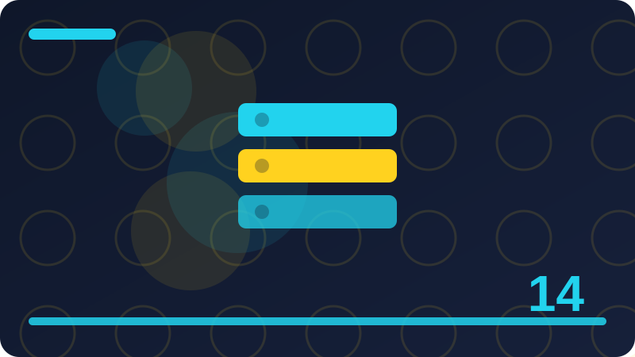

Chapter 14: Array Methods: map, filter and reduce

Section 1: Why Transform Arrays Instead of Looping by Hand
In this section we look closely at why transform arrays instead of looping by hand, and at why it matters when you write everyday JavaScript. The idea may seem small on its own, but it appears again and again in real programs, and getting comfortable with it now will make later chapters much easier. Think of this section as building one reliable brick: on its own it does one job well, and together with the bricks around it, it helps you build programs that are clear, predictable, and easier to change. As you read, keep a simple example in mind, because a concrete case makes an abstract rule far easier to remember than a definition alone.
At its heart, why transform arrays instead of looping by hand is about making your intention clear to both the computer and to anyone reading your code later, including your future self. JavaScript follows rules that are consistent once you see them in action, even when the first result looks surprising. The trick is to slow down and trace what happens step by step: what goes in, what changes, and what comes out. When you can describe those three things in plain language, you have understood the core of the idea, and the syntax becomes a detail you can look up rather than a mystery you must memorise.
Look at the short example in this section and follow it as if you were the computer. Start with the values that exist before the important line runs, then watch how each operation transforms them, and finish by checking the final value that is printed or stored. Notice the names chosen in the example, because good names tell you what a value is for without needing a comment on every line. If a line still feels unclear, copy the example into your own editor, run it, and change one small part at a time, watching how the output moves in response to your change.
const scores = [45, 80, 62, 95];
const passed = scores.filter((s) => s >= 60);
console.log(passed);Beginners often trip up on why transform arrays instead of looping by hand not because the idea is hard, but because they rush past the details that matter most. A common mistake is to assume something happens automatically when JavaScript actually needs an explicit step, or to assume a value has changed when it has only been read. Another common slip is to use a name that is almost right, or to forget what happens in an edge case such as an empty value, a missing value, or a value of a different type. The habit that prevents most of these errors is simple: predict the result before you run the code, then compare your prediction with the actual output and investigate any difference.
Read the example slowly, line by line, and say in your own words what each line is doing before you move on. A small experiment is worth more than memorising a rule, so test the idea with your own numbers and words.
Check: In your own words, what does why transform arrays instead of looping by hand mean, and how would you show it with a short JavaScript example of your own?
Section 2: map Creates a New Array
In this section we look closely at map creates a new array, and at why it matters when you write everyday JavaScript. The idea may seem small on its own, but it appears again and again in real programs, and getting comfortable with it now will make later chapters much easier. Think of this section as building one reliable brick: on its own it does one job well, and together with the bricks around it, it helps you build programs that are clear, predictable, and easier to change. As you read, keep a simple example in mind, because a concrete case makes an abstract rule far easier to remember than a definition alone.
At its heart, map creates a new array is about making your intention clear to both the computer and to anyone reading your code later, including your future self. JavaScript follows rules that are consistent once you see them in action, even when the first result looks surprising. The trick is to slow down and trace what happens step by step: what goes in, what changes, and what comes out. When you can describe those three things in plain language, you have understood the core of the idea, and the syntax becomes a detail you can look up rather than a mystery you must memorise.
Look at the short example in this section and follow it as if you were the computer. Start with the values that exist before the important line runs, then watch how each operation transforms them, and finish by checking the final value that is printed or stored. Notice the names chosen in the example, because good names tell you what a value is for without needing a comment on every line. If a line still feels unclear, copy the example into your own editor, run it, and change one small part at a time, watching how the output moves in response to your change.
const prices = [10, 20, 30];
const total = prices.reduce((sum, price) => sum + price, 0);
console.log(total);Beginners often trip up on map creates a new array not because the idea is hard, but because they rush past the details that matter most. A common mistake is to assume something happens automatically when JavaScript actually needs an explicit step, or to assume a value has changed when it has only been read. Another common slip is to use a name that is almost right, or to forget what happens in an edge case such as an empty value, a missing value, or a value of a different type. The habit that prevents most of these errors is simple: predict the result before you run the code, then compare your prediction with the actual output and investigate any difference.
A small experiment is worth more than memorising a rule, so test the idea with your own numbers and words. If the result surprises you, that surprise is useful, because it shows you where your mental model needs adjusting. Keep your examples short at first, so you can see cause and effect clearly without extra code getting in the way.
Check: In your own words, what does map creates a new array mean, and how would you show it with a short JavaScript example of your own?
Section 3: map Does Not Change the Original
In this section we look closely at map does not change the original, and at why it matters when you write everyday JavaScript. The idea may seem small on its own, but it appears again and again in real programs, and getting comfortable with it now will make later chapters much easier. Think of this section as building one reliable brick: on its own it does one job well, and together with the bricks around it, it helps you build programs that are clear, predictable, and easier to change. As you read, keep a simple example in mind, because a concrete case makes an abstract rule far easier to remember than a definition alone.
At its heart, map does not change the original is about making your intention clear to both the computer and to anyone reading your code later, including your future self. JavaScript follows rules that are consistent once you see them in action, even when the first result looks surprising. The trick is to slow down and trace what happens step by step: what goes in, what changes, and what comes out. When you can describe those three things in plain language, you have understood the core of the idea, and the syntax becomes a detail you can look up rather than a mystery you must memorise.
Look at the short example in this section and follow it as if you were the computer. Start with the values that exist before the important line runs, then watch how each operation transforms them, and finish by checking the final value that is printed or stored. Notice the names chosen in the example, because good names tell you what a value is for without needing a comment on every line. If a line still feels unclear, copy the example into your own editor, run it, and change one small part at a time, watching how the output moves in response to your change.
const users = [{ name: 'Ada', age: 22 }, { name: 'Ben', age: 17 }];
const adults = users.filter((u) => u.age >= 18).map((u) => u.name);
console.log(adults);Beginners often trip up on map does not change the original not because the idea is hard, but because they rush past the details that matter most. A common mistake is to assume something happens automatically when JavaScript actually needs an explicit step, or to assume a value has changed when it has only been read. Another common slip is to use a name that is almost right, or to forget what happens in an edge case such as an empty value, a missing value, or a value of a different type. The habit that prevents most of these errors is simple: predict the result before you run the code, then compare your prediction with the actual output and investigate any difference.
If the result surprises you, that surprise is useful, because it shows you where your mental model needs adjusting. Keep your examples short at first, so you can see cause and effect clearly without extra code getting in the way.
Check: In your own words, what does map does not change the original mean, and how would you show it with a short JavaScript example of your own?
Section 4: The Callback Arguments of map
In this section we look closely at the callback arguments of map, and at why it matters when you write everyday JavaScript. The idea may seem small on its own, but it appears again and again in real programs, and getting comfortable with it now will make later chapters much easier. Think of this section as building one reliable brick: on its own it does one job well, and together with the bricks around it, it helps you build programs that are clear, predictable, and easier to change. As you read, keep a simple example in mind, because a concrete case makes an abstract rule far easier to remember than a definition alone.
At its heart, the callback arguments of map is about making your intention clear to both the computer and to anyone reading your code later, including your future self. JavaScript follows rules that are consistent once you see them in action, even when the first result looks surprising. The trick is to slow down and trace what happens step by step: what goes in, what changes, and what comes out. When you can describe those three things in plain language, you have understood the core of the idea, and the syntax becomes a detail you can look up rather than a mystery you must memorise.
Look at the short example in this section and follow it as if you were the computer. Start with the values that exist before the important line runs, then watch how each operation transforms them, and finish by checking the final value that is printed or stored. Notice the names chosen in the example, because good names tell you what a value is for without needing a comment on every line. If a line still feels unclear, copy the example into your own editor, run it, and change one small part at a time, watching how the output moves in response to your change.
const words = ['apple', 'pear', 'banana'];
const longWords = words.filter((w) => w.length > 4);
console.log(longWords);Beginners often trip up on the callback arguments of map not because the idea is hard, but because they rush past the details that matter most. A common mistake is to assume something happens automatically when JavaScript actually needs an explicit step, or to assume a value has changed when it has only been read. Another common slip is to use a name that is almost right, or to forget what happens in an edge case such as an empty value, a missing value, or a value of a different type. The habit that prevents most of these errors is simple: predict the result before you run the code, then compare your prediction with the actual output and investigate any difference.
Keep your examples short at first, so you can see cause and effect clearly without extra code getting in the way. When you feel stuck, simplify the example to the smallest case that still shows the idea, then build it back up. Good JavaScript habits grow from these small, repeated checks, not from trying to learn everything in one sitting.
Check: In your own words, what does the callback arguments of map mean, and how would you show it with a short JavaScript example of your own?
Section 5: Using the Index in map
In this section we look closely at using the index in map, and at why it matters when you write everyday JavaScript. The idea may seem small on its own, but it appears again and again in real programs, and getting comfortable with it now will make later chapters much easier. Think of this section as building one reliable brick: on its own it does one job well, and together with the bricks around it, it helps you build programs that are clear, predictable, and easier to change. As you read, keep a simple example in mind, because a concrete case makes an abstract rule far easier to remember than a definition alone.
At its heart, using the index in map is about making your intention clear to both the computer and to anyone reading your code later, including your future self. JavaScript follows rules that are consistent once you see them in action, even when the first result looks surprising. The trick is to slow down and trace what happens step by step: what goes in, what changes, and what comes out. When you can describe those three things in plain language, you have understood the core of the idea, and the syntax becomes a detail you can look up rather than a mystery you must memorise.
Look at the short example in this section and follow it as if you were the computer. Start with the values that exist before the important line runs, then watch how each operation transforms them, and finish by checking the final value that is printed or stored. Notice the names chosen in the example, because good names tell you what a value is for without needing a comment on every line. If a line still feels unclear, copy the example into your own editor, run it, and change one small part at a time, watching how the output moves in response to your change.
const numbers = [1, 2, 3, 4];
const doubled = numbers.map((n) => n * 2);
console.log(doubled);
console.log(numbers);Beginners often trip up on using the index in map not because the idea is hard, but because they rush past the details that matter most. A common mistake is to assume something happens automatically when JavaScript actually needs an explicit step, or to assume a value has changed when it has only been read. Another common slip is to use a name that is almost right, or to forget what happens in an edge case such as an empty value, a missing value, or a value of a different type. The habit that prevents most of these errors is simple: predict the result before you run the code, then compare your prediction with the actual output and investigate any difference.
When you feel stuck, simplify the example to the smallest case that still shows the idea, then build it back up. Good JavaScript habits grow from these small, repeated checks, not from trying to learn everything in one sitting. Write a short comment above your code explaining what you expect, then compare that expectation with the real result.
Check: In your own words, what does using the index in map mean, and how would you show it with a short JavaScript example of your own?
Section 6: Transforming Numbers with map
In this section we look closely at transforming numbers with map, and at why it matters when you write everyday JavaScript. The idea may seem small on its own, but it appears again and again in real programs, and getting comfortable with it now will make later chapters much easier. Think of this section as building one reliable brick: on its own it does one job well, and together with the bricks around it, it helps you build programs that are clear, predictable, and easier to change. As you read, keep a simple example in mind, because a concrete case makes an abstract rule far easier to remember than a definition alone.
At its heart, transforming numbers with map is about making your intention clear to both the computer and to anyone reading your code later, including your future self. JavaScript follows rules that are consistent once you see them in action, even when the first result looks surprising. The trick is to slow down and trace what happens step by step: what goes in, what changes, and what comes out. When you can describe those three things in plain language, you have understood the core of the idea, and the syntax becomes a detail you can look up rather than a mystery you must memorise.
Look at the short example in this section and follow it as if you were the computer. Start with the values that exist before the important line runs, then watch how each operation transforms them, and finish by checking the final value that is printed or stored. Notice the names chosen in the example, because good names tell you what a value is for without needing a comment on every line. If a line still feels unclear, copy the example into your own editor, run it, and change one small part at a time, watching how the output moves in response to your change.
const scores = [45, 80, 62, 95];
const passed = scores.filter((s) => s >= 60);
console.log(passed);Beginners often trip up on transforming numbers with map not because the idea is hard, but because they rush past the details that matter most. A common mistake is to assume something happens automatically when JavaScript actually needs an explicit step, or to assume a value has changed when it has only been read. Another common slip is to use a name that is almost right, or to forget what happens in an edge case such as an empty value, a missing value, or a value of a different type. The habit that prevents most of these errors is simple: predict the result before you run the code, then compare your prediction with the actual output and investigate any difference.
Good JavaScript habits grow from these small, repeated checks, not from trying to learn everything in one sitting. Write a short comment above your code explaining what you expect, then compare that expectation with the real result. Practise the same idea with two or three different values, because one example can hide a pattern that a second example reveals.
Check: In your own words, what does transforming numbers with map mean, and how would you show it with a short JavaScript example of your own?
Section 7: Transforming Strings with map
In this section we look closely at transforming strings with map, and at why it matters when you write everyday JavaScript. The idea may seem small on its own, but it appears again and again in real programs, and getting comfortable with it now will make later chapters much easier. Think of this section as building one reliable brick: on its own it does one job well, and together with the bricks around it, it helps you build programs that are clear, predictable, and easier to change. As you read, keep a simple example in mind, because a concrete case makes an abstract rule far easier to remember than a definition alone.
At its heart, transforming strings with map is about making your intention clear to both the computer and to anyone reading your code later, including your future self. JavaScript follows rules that are consistent once you see them in action, even when the first result looks surprising. The trick is to slow down and trace what happens step by step: what goes in, what changes, and what comes out. When you can describe those three things in plain language, you have understood the core of the idea, and the syntax becomes a detail you can look up rather than a mystery you must memorise.
Look at the short example in this section and follow it as if you were the computer. Start with the values that exist before the important line runs, then watch how each operation transforms them, and finish by checking the final value that is printed or stored. Notice the names chosen in the example, because good names tell you what a value is for without needing a comment on every line. If a line still feels unclear, copy the example into your own editor, run it, and change one small part at a time, watching how the output moves in response to your change.
const prices = [10, 20, 30];
const total = prices.reduce((sum, price) => sum + price, 0);
console.log(total);Beginners often trip up on transforming strings with map not because the idea is hard, but because they rush past the details that matter most. A common mistake is to assume something happens automatically when JavaScript actually needs an explicit step, or to assume a value has changed when it has only been read. Another common slip is to use a name that is almost right, or to forget what happens in an edge case such as an empty value, a missing value, or a value of a different type. The habit that prevents most of these errors is simple: predict the result before you run the code, then compare your prediction with the actual output and investigate any difference.
Write a short comment above your code explaining what you expect, then compare that expectation with the real result. Practise the same idea with two or three different values, because one example can hide a pattern that a second example reveals. Ask yourself what would happen if the input were empty, very large, or slightly different, and then test that guess.
Check: In your own words, what does transforming strings with map mean, and how would you show it with a short JavaScript example of your own?
Section 8: Extracting a Property with map
In this section we look closely at extracting a property with map, and at why it matters when you write everyday JavaScript. The idea may seem small on its own, but it appears again and again in real programs, and getting comfortable with it now will make later chapters much easier. Think of this section as building one reliable brick: on its own it does one job well, and together with the bricks around it, it helps you build programs that are clear, predictable, and easier to change. As you read, keep a simple example in mind, because a concrete case makes an abstract rule far easier to remember than a definition alone.
At its heart, extracting a property with map is about making your intention clear to both the computer and to anyone reading your code later, including your future self. JavaScript follows rules that are consistent once you see them in action, even when the first result looks surprising. The trick is to slow down and trace what happens step by step: what goes in, what changes, and what comes out. When you can describe those three things in plain language, you have understood the core of the idea, and the syntax becomes a detail you can look up rather than a mystery you must memorise.
Look at the short example in this section and follow it as if you were the computer. Start with the values that exist before the important line runs, then watch how each operation transforms them, and finish by checking the final value that is printed or stored. Notice the names chosen in the example, because good names tell you what a value is for without needing a comment on every line. If a line still feels unclear, copy the example into your own editor, run it, and change one small part at a time, watching how the output moves in response to your change.
const users = [{ name: 'Ada', age: 22 }, { name: 'Ben', age: 17 }];
const adults = users.filter((u) => u.age >= 18).map((u) => u.name);
console.log(adults);Beginners often trip up on extracting a property with map not because the idea is hard, but because they rush past the details that matter most. A common mistake is to assume something happens automatically when JavaScript actually needs an explicit step, or to assume a value has changed when it has only been read. Another common slip is to use a name that is almost right, or to forget what happens in an edge case such as an empty value, a missing value, or a value of a different type. The habit that prevents most of these errors is simple: predict the result before you run the code, then compare your prediction with the actual output and investigate any difference.
Practise the same idea with two or three different values, because one example can hide a pattern that a second example reveals. Ask yourself what would happen if the input were empty, very large, or slightly different, and then test that guess. Break a confusing example into smaller pieces and run each piece on its own until every piece makes sense.
Check: In your own words, what does extracting a property with map mean, and how would you show it with a short JavaScript example of your own?
Section 9: Chaining map Calls
In this section we look closely at chaining map calls, and at why it matters when you write everyday JavaScript. The idea may seem small on its own, but it appears again and again in real programs, and getting comfortable with it now will make later chapters much easier. Think of this section as building one reliable brick: on its own it does one job well, and together with the bricks around it, it helps you build programs that are clear, predictable, and easier to change. As you read, keep a simple example in mind, because a concrete case makes an abstract rule far easier to remember than a definition alone.
At its heart, chaining map calls is about making your intention clear to both the computer and to anyone reading your code later, including your future self. JavaScript follows rules that are consistent once you see them in action, even when the first result looks surprising. The trick is to slow down and trace what happens step by step: what goes in, what changes, and what comes out. When you can describe those three things in plain language, you have understood the core of the idea, and the syntax becomes a detail you can look up rather than a mystery you must memorise.
Look at the short example in this section and follow it as if you were the computer. Start with the values that exist before the important line runs, then watch how each operation transforms them, and finish by checking the final value that is printed or stored. Notice the names chosen in the example, because good names tell you what a value is for without needing a comment on every line. If a line still feels unclear, copy the example into your own editor, run it, and change one small part at a time, watching how the output moves in response to your change.
const words = ['apple', 'pear', 'banana'];
const longWords = words.filter((w) => w.length > 4);
console.log(longWords);Beginners often trip up on chaining map calls not because the idea is hard, but because they rush past the details that matter most. A common mistake is to assume something happens automatically when JavaScript actually needs an explicit step, or to assume a value has changed when it has only been read. Another common slip is to use a name that is almost right, or to forget what happens in an edge case such as an empty value, a missing value, or a value of a different type. The habit that prevents most of these errors is simple: predict the result before you run the code, then compare your prediction with the actual output and investigate any difference.
Ask yourself what would happen if the input were empty, very large, or slightly different, and then test that guess. Break a confusing example into smaller pieces and run each piece on its own until every piece makes sense. Teaching the idea to someone else, even in a few spoken sentences, quickly shows which parts you truly understand.
Check: In your own words, what does chaining map calls mean, and how would you show it with a short JavaScript example of your own?
Section 10: filter Keeps Only Matches
In this section we look closely at filter keeps only matches, and at why it matters when you write everyday JavaScript. The idea may seem small on its own, but it appears again and again in real programs, and getting comfortable with it now will make later chapters much easier. Think of this section as building one reliable brick: on its own it does one job well, and together with the bricks around it, it helps you build programs that are clear, predictable, and easier to change. As you read, keep a simple example in mind, because a concrete case makes an abstract rule far easier to remember than a definition alone.
At its heart, filter keeps only matches is about making your intention clear to both the computer and to anyone reading your code later, including your future self. JavaScript follows rules that are consistent once you see them in action, even when the first result looks surprising. The trick is to slow down and trace what happens step by step: what goes in, what changes, and what comes out. When you can describe those three things in plain language, you have understood the core of the idea, and the syntax becomes a detail you can look up rather than a mystery you must memorise.
Look at the short example in this section and follow it as if you were the computer. Start with the values that exist before the important line runs, then watch how each operation transforms them, and finish by checking the final value that is printed or stored. Notice the names chosen in the example, because good names tell you what a value is for without needing a comment on every line. If a line still feels unclear, copy the example into your own editor, run it, and change one small part at a time, watching how the output moves in response to your change.
const numbers = [1, 2, 3, 4];
const doubled = numbers.map((n) => n * 2);
console.log(doubled);
console.log(numbers);Beginners often trip up on filter keeps only matches not because the idea is hard, but because they rush past the details that matter most. A common mistake is to assume something happens automatically when JavaScript actually needs an explicit step, or to assume a value has changed when it has only been read. Another common slip is to use a name that is almost right, or to forget what happens in an edge case such as an empty value, a missing value, or a value of a different type. The habit that prevents most of these errors is simple: predict the result before you run the code, then compare your prediction with the actual output and investigate any difference.
Break a confusing example into smaller pieces and run each piece on its own until every piece makes sense. Teaching the idea to someone else, even in a few spoken sentences, quickly shows which parts you truly understand. Keep a notebook of examples that confused you and revisit them after a day, because spaced practice makes the idea stick.
Check: In your own words, what does filter keeps only matches mean, and how would you show it with a short JavaScript example of your own?
Section 11: filter Returns a New Array
In this section we look closely at filter returns a new array, and at why it matters when you write everyday JavaScript. The idea may seem small on its own, but it appears again and again in real programs, and getting comfortable with it now will make later chapters much easier. Think of this section as building one reliable brick: on its own it does one job well, and together with the bricks around it, it helps you build programs that are clear, predictable, and easier to change. As you read, keep a simple example in mind, because a concrete case makes an abstract rule far easier to remember than a definition alone.
At its heart, filter returns a new array is about making your intention clear to both the computer and to anyone reading your code later, including your future self. JavaScript follows rules that are consistent once you see them in action, even when the first result looks surprising. The trick is to slow down and trace what happens step by step: what goes in, what changes, and what comes out. When you can describe those three things in plain language, you have understood the core of the idea, and the syntax becomes a detail you can look up rather than a mystery you must memorise.
Look at the short example in this section and follow it as if you were the computer. Start with the values that exist before the important line runs, then watch how each operation transforms them, and finish by checking the final value that is printed or stored. Notice the names chosen in the example, because good names tell you what a value is for without needing a comment on every line. If a line still feels unclear, copy the example into your own editor, run it, and change one small part at a time, watching how the output moves in response to your change.
const scores = [45, 80, 62, 95];
const passed = scores.filter((s) => s >= 60);
console.log(passed);Beginners often trip up on filter returns a new array not because the idea is hard, but because they rush past the details that matter most. A common mistake is to assume something happens automatically when JavaScript actually needs an explicit step, or to assume a value has changed when it has only been read. Another common slip is to use a name that is almost right, or to forget what happens in an edge case such as an empty value, a missing value, or a value of a different type. The habit that prevents most of these errors is simple: predict the result before you run the code, then compare your prediction with the actual output and investigate any difference.
Teaching the idea to someone else, even in a few spoken sentences, quickly shows which parts you truly understand. Keep a notebook of examples that confused you and revisit them after a day, because spaced practice makes the idea stick. Use console.log to inspect values at each step, rather than guessing what a variable holds at a given moment.
Check: In your own words, what does filter returns a new array mean, and how would you show it with a short JavaScript example of your own?
Section 12: The Predicate Function Explained
In this section we look closely at the predicate function explained, and at why it matters when you write everyday JavaScript. The idea may seem small on its own, but it appears again and again in real programs, and getting comfortable with it now will make later chapters much easier. Think of this section as building one reliable brick: on its own it does one job well, and together with the bricks around it, it helps you build programs that are clear, predictable, and easier to change. As you read, keep a simple example in mind, because a concrete case makes an abstract rule far easier to remember than a definition alone.
At its heart, the predicate function explained is about making your intention clear to both the computer and to anyone reading your code later, including your future self. JavaScript follows rules that are consistent once you see them in action, even when the first result looks surprising. The trick is to slow down and trace what happens step by step: what goes in, what changes, and what comes out. When you can describe those three things in plain language, you have understood the core of the idea, and the syntax becomes a detail you can look up rather than a mystery you must memorise.
Look at the short example in this section and follow it as if you were the computer. Start with the values that exist before the important line runs, then watch how each operation transforms them, and finish by checking the final value that is printed or stored. Notice the names chosen in the example, because good names tell you what a value is for without needing a comment on every line. If a line still feels unclear, copy the example into your own editor, run it, and change one small part at a time, watching how the output moves in response to your change.
const prices = [10, 20, 30];
const total = prices.reduce((sum, price) => sum + price, 0);
console.log(total);Beginners often trip up on the predicate function explained not because the idea is hard, but because they rush past the details that matter most. A common mistake is to assume something happens automatically when JavaScript actually needs an explicit step, or to assume a value has changed when it has only been read. Another common slip is to use a name that is almost right, or to forget what happens in an edge case such as an empty value, a missing value, or a value of a different type. The habit that prevents most of these errors is simple: predict the result before you run the code, then compare your prediction with the actual output and investigate any difference.
Keep a notebook of examples that confused you and revisit them after a day, because spaced practice makes the idea stick. Use console.log to inspect values at each step, rather than guessing what a variable holds at a given moment. Choose clear names in your own practice code, because a clear name makes the logic easier to follow and to debug.
Check: In your own words, what does the predicate function explained mean, and how would you show it with a short JavaScript example of your own?
Section 13: Filtering Numbers by a Rule
In this section we look closely at filtering numbers by a rule, and at why it matters when you write everyday JavaScript. The idea may seem small on its own, but it appears again and again in real programs, and getting comfortable with it now will make later chapters much easier. Think of this section as building one reliable brick: on its own it does one job well, and together with the bricks around it, it helps you build programs that are clear, predictable, and easier to change. As you read, keep a simple example in mind, because a concrete case makes an abstract rule far easier to remember than a definition alone.
At its heart, filtering numbers by a rule is about making your intention clear to both the computer and to anyone reading your code later, including your future self. JavaScript follows rules that are consistent once you see them in action, even when the first result looks surprising. The trick is to slow down and trace what happens step by step: what goes in, what changes, and what comes out. When you can describe those three things in plain language, you have understood the core of the idea, and the syntax becomes a detail you can look up rather than a mystery you must memorise.
Look at the short example in this section and follow it as if you were the computer. Start with the values that exist before the important line runs, then watch how each operation transforms them, and finish by checking the final value that is printed or stored. Notice the names chosen in the example, because good names tell you what a value is for without needing a comment on every line. If a line still feels unclear, copy the example into your own editor, run it, and change one small part at a time, watching how the output moves in response to your change.
const users = [{ name: 'Ada', age: 22 }, { name: 'Ben', age: 17 }];
const adults = users.filter((u) => u.age >= 18).map((u) => u.name);
console.log(adults);Beginners often trip up on filtering numbers by a rule not because the idea is hard, but because they rush past the details that matter most. A common mistake is to assume something happens automatically when JavaScript actually needs an explicit step, or to assume a value has changed when it has only been read. Another common slip is to use a name that is almost right, or to forget what happens in an edge case such as an empty value, a missing value, or a value of a different type. The habit that prevents most of these errors is simple: predict the result before you run the code, then compare your prediction with the actual output and investigate any difference.
Use console.log to inspect values at each step, rather than guessing what a variable holds at a given moment. Choose clear names in your own practice code, because a clear name makes the logic easier to follow and to debug. Try changing one value in the example and running it again to see exactly what changes in the output.
Check: In your own words, what does filtering numbers by a rule mean, and how would you show it with a short JavaScript example of your own?
Section 14: Filtering Strings by a Rule
In this section we look closely at filtering strings by a rule, and at why it matters when you write everyday JavaScript. The idea may seem small on its own, but it appears again and again in real programs, and getting comfortable with it now will make later chapters much easier. Think of this section as building one reliable brick: on its own it does one job well, and together with the bricks around it, it helps you build programs that are clear, predictable, and easier to change. As you read, keep a simple example in mind, because a concrete case makes an abstract rule far easier to remember than a definition alone.
At its heart, filtering strings by a rule is about making your intention clear to both the computer and to anyone reading your code later, including your future self. JavaScript follows rules that are consistent once you see them in action, even when the first result looks surprising. The trick is to slow down and trace what happens step by step: what goes in, what changes, and what comes out. When you can describe those three things in plain language, you have understood the core of the idea, and the syntax becomes a detail you can look up rather than a mystery you must memorise.
Look at the short example in this section and follow it as if you were the computer. Start with the values that exist before the important line runs, then watch how each operation transforms them, and finish by checking the final value that is printed or stored. Notice the names chosen in the example, because good names tell you what a value is for without needing a comment on every line. If a line still feels unclear, copy the example into your own editor, run it, and change one small part at a time, watching how the output moves in response to your change.
const words = ['apple', 'pear', 'banana'];
const longWords = words.filter((w) => w.length > 4);
console.log(longWords);Beginners often trip up on filtering strings by a rule not because the idea is hard, but because they rush past the details that matter most. A common mistake is to assume something happens automatically when JavaScript actually needs an explicit step, or to assume a value has changed when it has only been read. Another common slip is to use a name that is almost right, or to forget what happens in an edge case such as an empty value, a missing value, or a value of a different type. The habit that prevents most of these errors is simple: predict the result before you run the code, then compare your prediction with the actual output and investigate any difference.
Choose clear names in your own practice code, because a clear name makes the logic easier to follow and to debug. Try changing one value in the example and running it again to see exactly what changes in the output. Read the example slowly, line by line, and say in your own words what each line is doing before you move on.
Check: In your own words, what does filtering strings by a rule mean, and how would you show it with a short JavaScript example of your own?
Section 15: Filtering Objects by a Property
In this section we look closely at filtering objects by a property, and at why it matters when you write everyday JavaScript. The idea may seem small on its own, but it appears again and again in real programs, and getting comfortable with it now will make later chapters much easier. Think of this section as building one reliable brick: on its own it does one job well, and together with the bricks around it, it helps you build programs that are clear, predictable, and easier to change. As you read, keep a simple example in mind, because a concrete case makes an abstract rule far easier to remember than a definition alone.
At its heart, filtering objects by a property is about making your intention clear to both the computer and to anyone reading your code later, including your future self. JavaScript follows rules that are consistent once you see them in action, even when the first result looks surprising. The trick is to slow down and trace what happens step by step: what goes in, what changes, and what comes out. When you can describe those three things in plain language, you have understood the core of the idea, and the syntax becomes a detail you can look up rather than a mystery you must memorise.
Look at the short example in this section and follow it as if you were the computer. Start with the values that exist before the important line runs, then watch how each operation transforms them, and finish by checking the final value that is printed or stored. Notice the names chosen in the example, because good names tell you what a value is for without needing a comment on every line. If a line still feels unclear, copy the example into your own editor, run it, and change one small part at a time, watching how the output moves in response to your change.
const numbers = [1, 2, 3, 4];
const doubled = numbers.map((n) => n * 2);
console.log(doubled);
console.log(numbers);Beginners often trip up on filtering objects by a property not because the idea is hard, but because they rush past the details that matter most. A common mistake is to assume something happens automatically when JavaScript actually needs an explicit step, or to assume a value has changed when it has only been read. Another common slip is to use a name that is almost right, or to forget what happens in an edge case such as an empty value, a missing value, or a value of a different type. The habit that prevents most of these errors is simple: predict the result before you run the code, then compare your prediction with the actual output and investigate any difference.
Try changing one value in the example and running it again to see exactly what changes in the output. Read the example slowly, line by line, and say in your own words what each line is doing before you move on. A small experiment is worth more than memorising a rule, so test the idea with your own numbers and words.
Check: In your own words, what does filtering objects by a property mean, and how would you show it with a short JavaScript example of your own?
Section 16: Combining filter and map
In this section we look closely at combining filter and map, and at why it matters when you write everyday JavaScript. The idea may seem small on its own, but it appears again and again in real programs, and getting comfortable with it now will make later chapters much easier. Think of this section as building one reliable brick: on its own it does one job well, and together with the bricks around it, it helps you build programs that are clear, predictable, and easier to change. As you read, keep a simple example in mind, because a concrete case makes an abstract rule far easier to remember than a definition alone.
At its heart, combining filter and map is about making your intention clear to both the computer and to anyone reading your code later, including your future self. JavaScript follows rules that are consistent once you see them in action, even when the first result looks surprising. The trick is to slow down and trace what happens step by step: what goes in, what changes, and what comes out. When you can describe those three things in plain language, you have understood the core of the idea, and the syntax becomes a detail you can look up rather than a mystery you must memorise.
Look at the short example in this section and follow it as if you were the computer. Start with the values that exist before the important line runs, then watch how each operation transforms them, and finish by checking the final value that is printed or stored. Notice the names chosen in the example, because good names tell you what a value is for without needing a comment on every line. If a line still feels unclear, copy the example into your own editor, run it, and change one small part at a time, watching how the output moves in response to your change.
const scores = [45, 80, 62, 95];
const passed = scores.filter((s) => s >= 60);
console.log(passed);Beginners often trip up on combining filter and map not because the idea is hard, but because they rush past the details that matter most. A common mistake is to assume something happens automatically when JavaScript actually needs an explicit step, or to assume a value has changed when it has only been read. Another common slip is to use a name that is almost right, or to forget what happens in an edge case such as an empty value, a missing value, or a value of a different type. The habit that prevents most of these errors is simple: predict the result before you run the code, then compare your prediction with the actual output and investigate any difference.
Read the example slowly, line by line, and say in your own words what each line is doing before you move on. A small experiment is worth more than memorising a rule, so test the idea with your own numbers and words. If the result surprises you, that surprise is useful, because it shows you where your mental model needs adjusting.
Check: In your own words, what does combining filter and map mean, and how would you show it with a short JavaScript example of your own?
Section 17: find Versus filter
In this section we look closely at find versus filter, and at why it matters when you write everyday JavaScript. The idea may seem small on its own, but it appears again and again in real programs, and getting comfortable with it now will make later chapters much easier. Think of this section as building one reliable brick: on its own it does one job well, and together with the bricks around it, it helps you build programs that are clear, predictable, and easier to change. As you read, keep a simple example in mind, because a concrete case makes an abstract rule far easier to remember than a definition alone.
At its heart, find versus filter is about making your intention clear to both the computer and to anyone reading your code later, including your future self. JavaScript follows rules that are consistent once you see them in action, even when the first result looks surprising. The trick is to slow down and trace what happens step by step: what goes in, what changes, and what comes out. When you can describe those three things in plain language, you have understood the core of the idea, and the syntax becomes a detail you can look up rather than a mystery you must memorise.
Look at the short example in this section and follow it as if you were the computer. Start with the values that exist before the important line runs, then watch how each operation transforms them, and finish by checking the final value that is printed or stored. Notice the names chosen in the example, because good names tell you what a value is for without needing a comment on every line. If a line still feels unclear, copy the example into your own editor, run it, and change one small part at a time, watching how the output moves in response to your change.
const prices = [10, 20, 30];
const total = prices.reduce((sum, price) => sum + price, 0);
console.log(total);Beginners often trip up on find versus filter not because the idea is hard, but because they rush past the details that matter most. A common mistake is to assume something happens automatically when JavaScript actually needs an explicit step, or to assume a value has changed when it has only been read. Another common slip is to use a name that is almost right, or to forget what happens in an edge case such as an empty value, a missing value, or a value of a different type. The habit that prevents most of these errors is simple: predict the result before you run the code, then compare your prediction with the actual output and investigate any difference.
A small experiment is worth more than memorising a rule, so test the idea with your own numbers and words. If the result surprises you, that surprise is useful, because it shows you where your mental model needs adjusting. Keep your examples short at first, so you can see cause and effect clearly without extra code getting in the way.
Check: In your own words, what does find versus filter mean, and how would you show it with a short JavaScript example of your own?
Section 18: findIndex and First Matches
In this section we look closely at findindex and first matches, and at why it matters when you write everyday JavaScript. The idea may seem small on its own, but it appears again and again in real programs, and getting comfortable with it now will make later chapters much easier. Think of this section as building one reliable brick: on its own it does one job well, and together with the bricks around it, it helps you build programs that are clear, predictable, and easier to change. As you read, keep a simple example in mind, because a concrete case makes an abstract rule far easier to remember than a definition alone.
At its heart, findindex and first matches is about making your intention clear to both the computer and to anyone reading your code later, including your future self. JavaScript follows rules that are consistent once you see them in action, even when the first result looks surprising. The trick is to slow down and trace what happens step by step: what goes in, what changes, and what comes out. When you can describe those three things in plain language, you have understood the core of the idea, and the syntax becomes a detail you can look up rather than a mystery you must memorise.
Look at the short example in this section and follow it as if you were the computer. Start with the values that exist before the important line runs, then watch how each operation transforms them, and finish by checking the final value that is printed or stored. Notice the names chosen in the example, because good names tell you what a value is for without needing a comment on every line. If a line still feels unclear, copy the example into your own editor, run it, and change one small part at a time, watching how the output moves in response to your change.
const users = [{ name: 'Ada', age: 22 }, { name: 'Ben', age: 17 }];
const adults = users.filter((u) => u.age >= 18).map((u) => u.name);
console.log(adults);Beginners often trip up on findindex and first matches not because the idea is hard, but because they rush past the details that matter most. A common mistake is to assume something happens automatically when JavaScript actually needs an explicit step, or to assume a value has changed when it has only been read. Another common slip is to use a name that is almost right, or to forget what happens in an edge case such as an empty value, a missing value, or a value of a different type. The habit that prevents most of these errors is simple: predict the result before you run the code, then compare your prediction with the actual output and investigate any difference.
If the result surprises you, that surprise is useful, because it shows you where your mental model needs adjusting. Keep your examples short at first, so you can see cause and effect clearly without extra code getting in the way. When you feel stuck, simplify the example to the smallest case that still shows the idea, then build it back up.
Check: In your own words, what does findindex and first matches mean, and how would you show it with a short JavaScript example of your own?
Section 19: some: Does Any Value Match
In this section we look closely at some: does any value match, and at why it matters when you write everyday JavaScript. The idea may seem small on its own, but it appears again and again in real programs, and getting comfortable with it now will make later chapters much easier. Think of this section as building one reliable brick: on its own it does one job well, and together with the bricks around it, it helps you build programs that are clear, predictable, and easier to change. As you read, keep a simple example in mind, because a concrete case makes an abstract rule far easier to remember than a definition alone.
At its heart, some: does any value match is about making your intention clear to both the computer and to anyone reading your code later, including your future self. JavaScript follows rules that are consistent once you see them in action, even when the first result looks surprising. The trick is to slow down and trace what happens step by step: what goes in, what changes, and what comes out. When you can describe those three things in plain language, you have understood the core of the idea, and the syntax becomes a detail you can look up rather than a mystery you must memorise.
Look at the short example in this section and follow it as if you were the computer. Start with the values that exist before the important line runs, then watch how each operation transforms them, and finish by checking the final value that is printed or stored. Notice the names chosen in the example, because good names tell you what a value is for without needing a comment on every line. If a line still feels unclear, copy the example into your own editor, run it, and change one small part at a time, watching how the output moves in response to your change.
const words = ['apple', 'pear', 'banana'];
const longWords = words.filter((w) => w.length > 4);
console.log(longWords);Beginners often trip up on some: does any value match not because the idea is hard, but because they rush past the details that matter most. A common mistake is to assume something happens automatically when JavaScript actually needs an explicit step, or to assume a value has changed when it has only been read. Another common slip is to use a name that is almost right, or to forget what happens in an edge case such as an empty value, a missing value, or a value of a different type. The habit that prevents most of these errors is simple: predict the result before you run the code, then compare your prediction with the actual output and investigate any difference.
Keep your examples short at first, so you can see cause and effect clearly without extra code getting in the way. When you feel stuck, simplify the example to the smallest case that still shows the idea, then build it back up. Good JavaScript habits grow from these small, repeated checks, not from trying to learn everything in one sitting.
Check: In your own words, what does some: does any value match mean, and how would you show it with a short JavaScript example of your own?
Section 20: every: Do All Values Match
In this section we look closely at every: do all values match, and at why it matters when you write everyday JavaScript. The idea may seem small on its own, but it appears again and again in real programs, and getting comfortable with it now will make later chapters much easier. Think of this section as building one reliable brick: on its own it does one job well, and together with the bricks around it, it helps you build programs that are clear, predictable, and easier to change. As you read, keep a simple example in mind, because a concrete case makes an abstract rule far easier to remember than a definition alone.
At its heart, every: do all values match is about making your intention clear to both the computer and to anyone reading your code later, including your future self. JavaScript follows rules that are consistent once you see them in action, even when the first result looks surprising. The trick is to slow down and trace what happens step by step: what goes in, what changes, and what comes out. When you can describe those three things in plain language, you have understood the core of the idea, and the syntax becomes a detail you can look up rather than a mystery you must memorise.
Look at the short example in this section and follow it as if you were the computer. Start with the values that exist before the important line runs, then watch how each operation transforms them, and finish by checking the final value that is printed or stored. Notice the names chosen in the example, because good names tell you what a value is for without needing a comment on every line. If a line still feels unclear, copy the example into your own editor, run it, and change one small part at a time, watching how the output moves in response to your change.
const numbers = [1, 2, 3, 4];
const doubled = numbers.map((n) => n * 2);
console.log(doubled);
console.log(numbers);Beginners often trip up on every: do all values match not because the idea is hard, but because they rush past the details that matter most. A common mistake is to assume something happens automatically when JavaScript actually needs an explicit step, or to assume a value has changed when it has only been read. Another common slip is to use a name that is almost right, or to forget what happens in an edge case such as an empty value, a missing value, or a value of a different type. The habit that prevents most of these errors is simple: predict the result before you run the code, then compare your prediction with the actual output and investigate any difference.
When you feel stuck, simplify the example to the smallest case that still shows the idea, then build it back up. Good JavaScript habits grow from these small, repeated checks, not from trying to learn everything in one sitting. Write a short comment above your code explaining what you expect, then compare that expectation with the real result.
Check: In your own words, what does every: do all values match mean, and how would you show it with a short JavaScript example of your own?
Section 21: reduce Builds One Value from Many
In this section we look closely at reduce builds one value from many, and at why it matters when you write everyday JavaScript. The idea may seem small on its own, but it appears again and again in real programs, and getting comfortable with it now will make later chapters much easier. Think of this section as building one reliable brick: on its own it does one job well, and together with the bricks around it, it helps you build programs that are clear, predictable, and easier to change. As you read, keep a simple example in mind, because a concrete case makes an abstract rule far easier to remember than a definition alone.
At its heart, reduce builds one value from many is about making your intention clear to both the computer and to anyone reading your code later, including your future self. JavaScript follows rules that are consistent once you see them in action, even when the first result looks surprising. The trick is to slow down and trace what happens step by step: what goes in, what changes, and what comes out. When you can describe those three things in plain language, you have understood the core of the idea, and the syntax becomes a detail you can look up rather than a mystery you must memorise.
Look at the short example in this section and follow it as if you were the computer. Start with the values that exist before the important line runs, then watch how each operation transforms them, and finish by checking the final value that is printed or stored. Notice the names chosen in the example, because good names tell you what a value is for without needing a comment on every line. If a line still feels unclear, copy the example into your own editor, run it, and change one small part at a time, watching how the output moves in response to your change.
const scores = [45, 80, 62, 95];
const passed = scores.filter((s) => s >= 60);
console.log(passed);Beginners often trip up on reduce builds one value from many not because the idea is hard, but because they rush past the details that matter most. A common mistake is to assume something happens automatically when JavaScript actually needs an explicit step, or to assume a value has changed when it has only been read. Another common slip is to use a name that is almost right, or to forget what happens in an edge case such as an empty value, a missing value, or a value of a different type. The habit that prevents most of these errors is simple: predict the result before you run the code, then compare your prediction with the actual output and investigate any difference.
Good JavaScript habits grow from these small, repeated checks, not from trying to learn everything in one sitting. Write a short comment above your code explaining what you expect, then compare that expectation with the real result. Practise the same idea with two or three different values, because one example can hide a pattern that a second example reveals.
Check: In your own words, what does reduce builds one value from many mean, and how would you show it with a short JavaScript example of your own?
Section 22: The Accumulator Explained Simply
In this section we look closely at the accumulator explained simply, and at why it matters when you write everyday JavaScript. The idea may seem small on its own, but it appears again and again in real programs, and getting comfortable with it now will make later chapters much easier. Think of this section as building one reliable brick: on its own it does one job well, and together with the bricks around it, it helps you build programs that are clear, predictable, and easier to change. As you read, keep a simple example in mind, because a concrete case makes an abstract rule far easier to remember than a definition alone.
At its heart, the accumulator explained simply is about making your intention clear to both the computer and to anyone reading your code later, including your future self. JavaScript follows rules that are consistent once you see them in action, even when the first result looks surprising. The trick is to slow down and trace what happens step by step: what goes in, what changes, and what comes out. When you can describe those three things in plain language, you have understood the core of the idea, and the syntax becomes a detail you can look up rather than a mystery you must memorise.
Look at the short example in this section and follow it as if you were the computer. Start with the values that exist before the important line runs, then watch how each operation transforms them, and finish by checking the final value that is printed or stored. Notice the names chosen in the example, because good names tell you what a value is for without needing a comment on every line. If a line still feels unclear, copy the example into your own editor, run it, and change one small part at a time, watching how the output moves in response to your change.
const prices = [10, 20, 30];
const total = prices.reduce((sum, price) => sum + price, 0);
console.log(total);Beginners often trip up on the accumulator explained simply not because the idea is hard, but because they rush past the details that matter most. A common mistake is to assume something happens automatically when JavaScript actually needs an explicit step, or to assume a value has changed when it has only been read. Another common slip is to use a name that is almost right, or to forget what happens in an edge case such as an empty value, a missing value, or a value of a different type. The habit that prevents most of these errors is simple: predict the result before you run the code, then compare your prediction with the actual output and investigate any difference.
Write a short comment above your code explaining what you expect, then compare that expectation with the real result. Practise the same idea with two or three different values, because one example can hide a pattern that a second example reveals. Ask yourself what would happen if the input were empty, very large, or slightly different, and then test that guess.
Check: In your own words, what does the accumulator explained simply mean, and how would you show it with a short JavaScript example of your own?
Section 23: reduce with an Initial Value
In this section we look closely at reduce with an initial value, and at why it matters when you write everyday JavaScript. The idea may seem small on its own, but it appears again and again in real programs, and getting comfortable with it now will make later chapters much easier. Think of this section as building one reliable brick: on its own it does one job well, and together with the bricks around it, it helps you build programs that are clear, predictable, and easier to change. As you read, keep a simple example in mind, because a concrete case makes an abstract rule far easier to remember than a definition alone.
At its heart, reduce with an initial value is about making your intention clear to both the computer and to anyone reading your code later, including your future self. JavaScript follows rules that are consistent once you see them in action, even when the first result looks surprising. The trick is to slow down and trace what happens step by step: what goes in, what changes, and what comes out. When you can describe those three things in plain language, you have understood the core of the idea, and the syntax becomes a detail you can look up rather than a mystery you must memorise.
Look at the short example in this section and follow it as if you were the computer. Start with the values that exist before the important line runs, then watch how each operation transforms them, and finish by checking the final value that is printed or stored. Notice the names chosen in the example, because good names tell you what a value is for without needing a comment on every line. If a line still feels unclear, copy the example into your own editor, run it, and change one small part at a time, watching how the output moves in response to your change.
const users = [{ name: 'Ada', age: 22 }, { name: 'Ben', age: 17 }];
const adults = users.filter((u) => u.age >= 18).map((u) => u.name);
console.log(adults);Beginners often trip up on reduce with an initial value not because the idea is hard, but because they rush past the details that matter most. A common mistake is to assume something happens automatically when JavaScript actually needs an explicit step, or to assume a value has changed when it has only been read. Another common slip is to use a name that is almost right, or to forget what happens in an edge case such as an empty value, a missing value, or a value of a different type. The habit that prevents most of these errors is simple: predict the result before you run the code, then compare your prediction with the actual output and investigate any difference.
Practise the same idea with two or three different values, because one example can hide a pattern that a second example reveals. Ask yourself what would happen if the input were empty, very large, or slightly different, and then test that guess. Break a confusing example into smaller pieces and run each piece on its own until every piece makes sense.
Check: In your own words, what does reduce with an initial value mean, and how would you show it with a short JavaScript example of your own?
Section 24: reduce Without an Initial Value
In this section we look closely at reduce without an initial value, and at why it matters when you write everyday JavaScript. The idea may seem small on its own, but it appears again and again in real programs, and getting comfortable with it now will make later chapters much easier. Think of this section as building one reliable brick: on its own it does one job well, and together with the bricks around it, it helps you build programs that are clear, predictable, and easier to change. As you read, keep a simple example in mind, because a concrete case makes an abstract rule far easier to remember than a definition alone.
At its heart, reduce without an initial value is about making your intention clear to both the computer and to anyone reading your code later, including your future self. JavaScript follows rules that are consistent once you see them in action, even when the first result looks surprising. The trick is to slow down and trace what happens step by step: what goes in, what changes, and what comes out. When you can describe those three things in plain language, you have understood the core of the idea, and the syntax becomes a detail you can look up rather than a mystery you must memorise.
Look at the short example in this section and follow it as if you were the computer. Start with the values that exist before the important line runs, then watch how each operation transforms them, and finish by checking the final value that is printed or stored. Notice the names chosen in the example, because good names tell you what a value is for without needing a comment on every line. If a line still feels unclear, copy the example into your own editor, run it, and change one small part at a time, watching how the output moves in response to your change.
const words = ['apple', 'pear', 'banana'];
const longWords = words.filter((w) => w.length > 4);
console.log(longWords);Beginners often trip up on reduce without an initial value not because the idea is hard, but because they rush past the details that matter most. A common mistake is to assume something happens automatically when JavaScript actually needs an explicit step, or to assume a value has changed when it has only been read. Another common slip is to use a name that is almost right, or to forget what happens in an edge case such as an empty value, a missing value, or a value of a different type. The habit that prevents most of these errors is simple: predict the result before you run the code, then compare your prediction with the actual output and investigate any difference.
Ask yourself what would happen if the input were empty, very large, or slightly different, and then test that guess. Break a confusing example into smaller pieces and run each piece on its own until every piece makes sense. Teaching the idea to someone else, even in a few spoken sentences, quickly shows which parts you truly understand.
Check: In your own words, what does reduce without an initial value mean, and how would you show it with a short JavaScript example of your own?
Section 25: Summing with reduce
In this section we look closely at summing with reduce, and at why it matters when you write everyday JavaScript. The idea may seem small on its own, but it appears again and again in real programs, and getting comfortable with it now will make later chapters much easier. Think of this section as building one reliable brick: on its own it does one job well, and together with the bricks around it, it helps you build programs that are clear, predictable, and easier to change. As you read, keep a simple example in mind, because a concrete case makes an abstract rule far easier to remember than a definition alone.
At its heart, summing with reduce is about making your intention clear to both the computer and to anyone reading your code later, including your future self. JavaScript follows rules that are consistent once you see them in action, even when the first result looks surprising. The trick is to slow down and trace what happens step by step: what goes in, what changes, and what comes out. When you can describe those three things in plain language, you have understood the core of the idea, and the syntax becomes a detail you can look up rather than a mystery you must memorise.
Look at the short example in this section and follow it as if you were the computer. Start with the values that exist before the important line runs, then watch how each operation transforms them, and finish by checking the final value that is printed or stored. Notice the names chosen in the example, because good names tell you what a value is for without needing a comment on every line. If a line still feels unclear, copy the example into your own editor, run it, and change one small part at a time, watching how the output moves in response to your change.
const numbers = [1, 2, 3, 4];
const doubled = numbers.map((n) => n * 2);
console.log(doubled);
console.log(numbers);Beginners often trip up on summing with reduce not because the idea is hard, but because they rush past the details that matter most. A common mistake is to assume something happens automatically when JavaScript actually needs an explicit step, or to assume a value has changed when it has only been read. Another common slip is to use a name that is almost right, or to forget what happens in an edge case such as an empty value, a missing value, or a value of a different type. The habit that prevents most of these errors is simple: predict the result before you run the code, then compare your prediction with the actual output and investigate any difference.
Break a confusing example into smaller pieces and run each piece on its own until every piece makes sense. Teaching the idea to someone else, even in a few spoken sentences, quickly shows which parts you truly understand. Keep a notebook of examples that confused you and revisit them after a day, because spaced practice makes the idea stick.
Check: In your own words, what does summing with reduce mean, and how would you show it with a short JavaScript example of your own?
Section 26: Counting with reduce
In this section we look closely at counting with reduce, and at why it matters when you write everyday JavaScript. The idea may seem small on its own, but it appears again and again in real programs, and getting comfortable with it now will make later chapters much easier. Think of this section as building one reliable brick: on its own it does one job well, and together with the bricks around it, it helps you build programs that are clear, predictable, and easier to change. As you read, keep a simple example in mind, because a concrete case makes an abstract rule far easier to remember than a definition alone.
At its heart, counting with reduce is about making your intention clear to both the computer and to anyone reading your code later, including your future self. JavaScript follows rules that are consistent once you see them in action, even when the first result looks surprising. The trick is to slow down and trace what happens step by step: what goes in, what changes, and what comes out. When you can describe those three things in plain language, you have understood the core of the idea, and the syntax becomes a detail you can look up rather than a mystery you must memorise.
Look at the short example in this section and follow it as if you were the computer. Start with the values that exist before the important line runs, then watch how each operation transforms them, and finish by checking the final value that is printed or stored. Notice the names chosen in the example, because good names tell you what a value is for without needing a comment on every line. If a line still feels unclear, copy the example into your own editor, run it, and change one small part at a time, watching how the output moves in response to your change.
const scores = [45, 80, 62, 95];
const passed = scores.filter((s) => s >= 60);
console.log(passed);Beginners often trip up on counting with reduce not because the idea is hard, but because they rush past the details that matter most. A common mistake is to assume something happens automatically when JavaScript actually needs an explicit step, or to assume a value has changed when it has only been read. Another common slip is to use a name that is almost right, or to forget what happens in an edge case such as an empty value, a missing value, or a value of a different type. The habit that prevents most of these errors is simple: predict the result before you run the code, then compare your prediction with the actual output and investigate any difference.
Teaching the idea to someone else, even in a few spoken sentences, quickly shows which parts you truly understand. Keep a notebook of examples that confused you and revisit them after a day, because spaced practice makes the idea stick. Use console.log to inspect values at each step, rather than guessing what a variable holds at a given moment.
Check: In your own words, what does counting with reduce mean, and how would you show it with a short JavaScript example of your own?
Section 27: Finding a Maximum with reduce
In this section we look closely at finding a maximum with reduce, and at why it matters when you write everyday JavaScript. The idea may seem small on its own, but it appears again and again in real programs, and getting comfortable with it now will make later chapters much easier. Think of this section as building one reliable brick: on its own it does one job well, and together with the bricks around it, it helps you build programs that are clear, predictable, and easier to change. As you read, keep a simple example in mind, because a concrete case makes an abstract rule far easier to remember than a definition alone.
At its heart, finding a maximum with reduce is about making your intention clear to both the computer and to anyone reading your code later, including your future self. JavaScript follows rules that are consistent once you see them in action, even when the first result looks surprising. The trick is to slow down and trace what happens step by step: what goes in, what changes, and what comes out. When you can describe those three things in plain language, you have understood the core of the idea, and the syntax becomes a detail you can look up rather than a mystery you must memorise.
Look at the short example in this section and follow it as if you were the computer. Start with the values that exist before the important line runs, then watch how each operation transforms them, and finish by checking the final value that is printed or stored. Notice the names chosen in the example, because good names tell you what a value is for without needing a comment on every line. If a line still feels unclear, copy the example into your own editor, run it, and change one small part at a time, watching how the output moves in response to your change.
const prices = [10, 20, 30];
const total = prices.reduce((sum, price) => sum + price, 0);
console.log(total);Beginners often trip up on finding a maximum with reduce not because the idea is hard, but because they rush past the details that matter most. A common mistake is to assume something happens automatically when JavaScript actually needs an explicit step, or to assume a value has changed when it has only been read. Another common slip is to use a name that is almost right, or to forget what happens in an edge case such as an empty value, a missing value, or a value of a different type. The habit that prevents most of these errors is simple: predict the result before you run the code, then compare your prediction with the actual output and investigate any difference.
Keep a notebook of examples that confused you and revisit them after a day, because spaced practice makes the idea stick. Use console.log to inspect values at each step, rather than guessing what a variable holds at a given moment. Choose clear names in your own practice code, because a clear name makes the logic easier to follow and to debug.
Check: In your own words, what does finding a maximum with reduce mean, and how would you show it with a short JavaScript example of your own?
Section 28: Building a String with reduce
In this section we look closely at building a string with reduce, and at why it matters when you write everyday JavaScript. The idea may seem small on its own, but it appears again and again in real programs, and getting comfortable with it now will make later chapters much easier. Think of this section as building one reliable brick: on its own it does one job well, and together with the bricks around it, it helps you build programs that are clear, predictable, and easier to change. As you read, keep a simple example in mind, because a concrete case makes an abstract rule far easier to remember than a definition alone.
At its heart, building a string with reduce is about making your intention clear to both the computer and to anyone reading your code later, including your future self. JavaScript follows rules that are consistent once you see them in action, even when the first result looks surprising. The trick is to slow down and trace what happens step by step: what goes in, what changes, and what comes out. When you can describe those three things in plain language, you have understood the core of the idea, and the syntax becomes a detail you can look up rather than a mystery you must memorise.
Look at the short example in this section and follow it as if you were the computer. Start with the values that exist before the important line runs, then watch how each operation transforms them, and finish by checking the final value that is printed or stored. Notice the names chosen in the example, because good names tell you what a value is for without needing a comment on every line. If a line still feels unclear, copy the example into your own editor, run it, and change one small part at a time, watching how the output moves in response to your change.
const users = [{ name: 'Ada', age: 22 }, { name: 'Ben', age: 17 }];
const adults = users.filter((u) => u.age >= 18).map((u) => u.name);
console.log(adults);Beginners often trip up on building a string with reduce not because the idea is hard, but because they rush past the details that matter most. A common mistake is to assume something happens automatically when JavaScript actually needs an explicit step, or to assume a value has changed when it has only been read. Another common slip is to use a name that is almost right, or to forget what happens in an edge case such as an empty value, a missing value, or a value of a different type. The habit that prevents most of these errors is simple: predict the result before you run the code, then compare your prediction with the actual output and investigate any difference.
Use console.log to inspect values at each step, rather than guessing what a variable holds at a given moment. Choose clear names in your own practice code, because a clear name makes the logic easier to follow and to debug. Try changing one value in the example and running it again to see exactly what changes in the output.
Check: In your own words, what does building a string with reduce mean, and how would you show it with a short JavaScript example of your own?
Section 29: Building an Object with reduce
In this section we look closely at building an object with reduce, and at why it matters when you write everyday JavaScript. The idea may seem small on its own, but it appears again and again in real programs, and getting comfortable with it now will make later chapters much easier. Think of this section as building one reliable brick: on its own it does one job well, and together with the bricks around it, it helps you build programs that are clear, predictable, and easier to change. As you read, keep a simple example in mind, because a concrete case makes an abstract rule far easier to remember than a definition alone.
At its heart, building an object with reduce is about making your intention clear to both the computer and to anyone reading your code later, including your future self. JavaScript follows rules that are consistent once you see them in action, even when the first result looks surprising. The trick is to slow down and trace what happens step by step: what goes in, what changes, and what comes out. When you can describe those three things in plain language, you have understood the core of the idea, and the syntax becomes a detail you can look up rather than a mystery you must memorise.
Look at the short example in this section and follow it as if you were the computer. Start with the values that exist before the important line runs, then watch how each operation transforms them, and finish by checking the final value that is printed or stored. Notice the names chosen in the example, because good names tell you what a value is for without needing a comment on every line. If a line still feels unclear, copy the example into your own editor, run it, and change one small part at a time, watching how the output moves in response to your change.
const words = ['apple', 'pear', 'banana'];
const longWords = words.filter((w) => w.length > 4);
console.log(longWords);Beginners often trip up on building an object with reduce not because the idea is hard, but because they rush past the details that matter most. A common mistake is to assume something happens automatically when JavaScript actually needs an explicit step, or to assume a value has changed when it has only been read. Another common slip is to use a name that is almost right, or to forget what happens in an edge case such as an empty value, a missing value, or a value of a different type. The habit that prevents most of these errors is simple: predict the result before you run the code, then compare your prediction with the actual output and investigate any difference.
Choose clear names in your own practice code, because a clear name makes the logic easier to follow and to debug. Try changing one value in the example and running it again to see exactly what changes in the output. Read the example slowly, line by line, and say in your own words what each line is doing before you move on.
Check: In your own words, what does building an object with reduce mean, and how would you show it with a short JavaScript example of your own?
Section 30: Grouping Values with reduce
In this section we look closely at grouping values with reduce, and at why it matters when you write everyday JavaScript. The idea may seem small on its own, but it appears again and again in real programs, and getting comfortable with it now will make later chapters much easier. Think of this section as building one reliable brick: on its own it does one job well, and together with the bricks around it, it helps you build programs that are clear, predictable, and easier to change. As you read, keep a simple example in mind, because a concrete case makes an abstract rule far easier to remember than a definition alone.
At its heart, grouping values with reduce is about making your intention clear to both the computer and to anyone reading your code later, including your future self. JavaScript follows rules that are consistent once you see them in action, even when the first result looks surprising. The trick is to slow down and trace what happens step by step: what goes in, what changes, and what comes out. When you can describe those three things in plain language, you have understood the core of the idea, and the syntax becomes a detail you can look up rather than a mystery you must memorise.
Look at the short example in this section and follow it as if you were the computer. Start with the values that exist before the important line runs, then watch how each operation transforms them, and finish by checking the final value that is printed or stored. Notice the names chosen in the example, because good names tell you what a value is for without needing a comment on every line. If a line still feels unclear, copy the example into your own editor, run it, and change one small part at a time, watching how the output moves in response to your change.
const numbers = [1, 2, 3, 4];
const doubled = numbers.map((n) => n * 2);
console.log(doubled);
console.log(numbers);Beginners often trip up on grouping values with reduce not because the idea is hard, but because they rush past the details that matter most. A common mistake is to assume something happens automatically when JavaScript actually needs an explicit step, or to assume a value has changed when it has only been read. Another common slip is to use a name that is almost right, or to forget what happens in an edge case such as an empty value, a missing value, or a value of a different type. The habit that prevents most of these errors is simple: predict the result before you run the code, then compare your prediction with the actual output and investigate any difference.
Try changing one value in the example and running it again to see exactly what changes in the output. Read the example slowly, line by line, and say in your own words what each line is doing before you move on. A small experiment is worth more than memorising a rule, so test the idea with your own numbers and words.
Check: In your own words, what does grouping values with reduce mean, and how would you show it with a short JavaScript example of your own?
Section 31: Chaining filter, map and reduce
In this section we look closely at chaining filter, map and reduce, and at why it matters when you write everyday JavaScript. The idea may seem small on its own, but it appears again and again in real programs, and getting comfortable with it now will make later chapters much easier. Think of this section as building one reliable brick: on its own it does one job well, and together with the bricks around it, it helps you build programs that are clear, predictable, and easier to change. As you read, keep a simple example in mind, because a concrete case makes an abstract rule far easier to remember than a definition alone.
At its heart, chaining filter, map and reduce is about making your intention clear to both the computer and to anyone reading your code later, including your future self. JavaScript follows rules that are consistent once you see them in action, even when the first result looks surprising. The trick is to slow down and trace what happens step by step: what goes in, what changes, and what comes out. When you can describe those three things in plain language, you have understood the core of the idea, and the syntax becomes a detail you can look up rather than a mystery you must memorise.
Look at the short example in this section and follow it as if you were the computer. Start with the values that exist before the important line runs, then watch how each operation transforms them, and finish by checking the final value that is printed or stored. Notice the names chosen in the example, because good names tell you what a value is for without needing a comment on every line. If a line still feels unclear, copy the example into your own editor, run it, and change one small part at a time, watching how the output moves in response to your change.
const scores = [45, 80, 62, 95];
const passed = scores.filter((s) => s >= 60);
console.log(passed);Beginners often trip up on chaining filter, map and reduce not because the idea is hard, but because they rush past the details that matter most. A common mistake is to assume something happens automatically when JavaScript actually needs an explicit step, or to assume a value has changed when it has only been read. Another common slip is to use a name that is almost right, or to forget what happens in an edge case such as an empty value, a missing value, or a value of a different type. The habit that prevents most of these errors is simple: predict the result before you run the code, then compare your prediction with the actual output and investigate any difference.
Read the example slowly, line by line, and say in your own words what each line is doing before you move on. A small experiment is worth more than memorising a rule, so test the idea with your own numbers and words. If the result surprises you, that surprise is useful, because it shows you where your mental model needs adjusting.
Check: In your own words, what does chaining filter, map and reduce mean, and how would you show it with a short JavaScript example of your own?
Section 32: Order Matters in a Chain
In this section we look closely at order matters in a chain, and at why it matters when you write everyday JavaScript. The idea may seem small on its own, but it appears again and again in real programs, and getting comfortable with it now will make later chapters much easier. Think of this section as building one reliable brick: on its own it does one job well, and together with the bricks around it, it helps you build programs that are clear, predictable, and easier to change. As you read, keep a simple example in mind, because a concrete case makes an abstract rule far easier to remember than a definition alone.
At its heart, order matters in a chain is about making your intention clear to both the computer and to anyone reading your code later, including your future self. JavaScript follows rules that are consistent once you see them in action, even when the first result looks surprising. The trick is to slow down and trace what happens step by step: what goes in, what changes, and what comes out. When you can describe those three things in plain language, you have understood the core of the idea, and the syntax becomes a detail you can look up rather than a mystery you must memorise.
Look at the short example in this section and follow it as if you were the computer. Start with the values that exist before the important line runs, then watch how each operation transforms them, and finish by checking the final value that is printed or stored. Notice the names chosen in the example, because good names tell you what a value is for without needing a comment on every line. If a line still feels unclear, copy the example into your own editor, run it, and change one small part at a time, watching how the output moves in response to your change.
const prices = [10, 20, 30];
const total = prices.reduce((sum, price) => sum + price, 0);
console.log(total);Beginners often trip up on order matters in a chain not because the idea is hard, but because they rush past the details that matter most. A common mistake is to assume something happens automatically when JavaScript actually needs an explicit step, or to assume a value has changed when it has only been read. Another common slip is to use a name that is almost right, or to forget what happens in an edge case such as an empty value, a missing value, or a value of a different type. The habit that prevents most of these errors is simple: predict the result before you run the code, then compare your prediction with the actual output and investigate any difference.
A small experiment is worth more than memorising a rule, so test the idea with your own numbers and words. If the result surprises you, that surprise is useful, because it shows you where your mental model needs adjusting. Keep your examples short at first, so you can see cause and effect clearly without extra code getting in the way.
Check: In your own words, what does order matters in a chain mean, and how would you show it with a short JavaScript example of your own?
Section 33: Avoiding Mutation in Method Chains
In this section we look closely at avoiding mutation in method chains, and at why it matters when you write everyday JavaScript. The idea may seem small on its own, but it appears again and again in real programs, and getting comfortable with it now will make later chapters much easier. Think of this section as building one reliable brick: on its own it does one job well, and together with the bricks around it, it helps you build programs that are clear, predictable, and easier to change. As you read, keep a simple example in mind, because a concrete case makes an abstract rule far easier to remember than a definition alone.
At its heart, avoiding mutation in method chains is about making your intention clear to both the computer and to anyone reading your code later, including your future self. JavaScript follows rules that are consistent once you see them in action, even when the first result looks surprising. The trick is to slow down and trace what happens step by step: what goes in, what changes, and what comes out. When you can describe those three things in plain language, you have understood the core of the idea, and the syntax becomes a detail you can look up rather than a mystery you must memorise.
Look at the short example in this section and follow it as if you were the computer. Start with the values that exist before the important line runs, then watch how each operation transforms them, and finish by checking the final value that is printed or stored. Notice the names chosen in the example, because good names tell you what a value is for without needing a comment on every line. If a line still feels unclear, copy the example into your own editor, run it, and change one small part at a time, watching how the output moves in response to your change.
const users = [{ name: 'Ada', age: 22 }, { name: 'Ben', age: 17 }];
const adults = users.filter((u) => u.age >= 18).map((u) => u.name);
console.log(adults);Beginners often trip up on avoiding mutation in method chains not because the idea is hard, but because they rush past the details that matter most. A common mistake is to assume something happens automatically when JavaScript actually needs an explicit step, or to assume a value has changed when it has only been read. Another common slip is to use a name that is almost right, or to forget what happens in an edge case such as an empty value, a missing value, or a value of a different type. The habit that prevents most of these errors is simple: predict the result before you run the code, then compare your prediction with the actual output and investigate any difference.
If the result surprises you, that surprise is useful, because it shows you where your mental model needs adjusting. Keep your examples short at first, so you can see cause and effect clearly without extra code getting in the way. When you feel stuck, simplify the example to the smallest case that still shows the idea, then build it back up.
Check: In your own words, what does avoiding mutation in method chains mean, and how would you show it with a short JavaScript example of your own?
Section 34: Sorting After Filtering
In this section we look closely at sorting after filtering, and at why it matters when you write everyday JavaScript. The idea may seem small on its own, but it appears again and again in real programs, and getting comfortable with it now will make later chapters much easier. Think of this section as building one reliable brick: on its own it does one job well, and together with the bricks around it, it helps you build programs that are clear, predictable, and easier to change. As you read, keep a simple example in mind, because a concrete case makes an abstract rule far easier to remember than a definition alone.
At its heart, sorting after filtering is about making your intention clear to both the computer and to anyone reading your code later, including your future self. JavaScript follows rules that are consistent once you see them in action, even when the first result looks surprising. The trick is to slow down and trace what happens step by step: what goes in, what changes, and what comes out. When you can describe those three things in plain language, you have understood the core of the idea, and the syntax becomes a detail you can look up rather than a mystery you must memorise.
Look at the short example in this section and follow it as if you were the computer. Start with the values that exist before the important line runs, then watch how each operation transforms them, and finish by checking the final value that is printed or stored. Notice the names chosen in the example, because good names tell you what a value is for without needing a comment on every line. If a line still feels unclear, copy the example into your own editor, run it, and change one small part at a time, watching how the output moves in response to your change.
const words = ['apple', 'pear', 'banana'];
const longWords = words.filter((w) => w.length > 4);
console.log(longWords);Beginners often trip up on sorting after filtering not because the idea is hard, but because they rush past the details that matter most. A common mistake is to assume something happens automatically when JavaScript actually needs an explicit step, or to assume a value has changed when it has only been read. Another common slip is to use a name that is almost right, or to forget what happens in an edge case such as an empty value, a missing value, or a value of a different type. The habit that prevents most of these errors is simple: predict the result before you run the code, then compare your prediction with the actual output and investigate any difference.
Keep your examples short at first, so you can see cause and effect clearly without extra code getting in the way. When you feel stuck, simplify the example to the smallest case that still shows the idea, then build it back up. Good JavaScript habits grow from these small, repeated checks, not from trying to learn everything in one sitting.
Check: In your own words, what does sorting after filtering mean, and how would you show it with a short JavaScript example of your own?
Section 35: Mapping Before Filtering and Why Order Changes Results
In this section we look closely at mapping before filtering and why order changes results, and at why it matters when you write everyday JavaScript. The idea may seem small on its own, but it appears again and again in real programs, and getting comfortable with it now will make later chapters much easier. Think of this section as building one reliable brick: on its own it does one job well, and together with the bricks around it, it helps you build programs that are clear, predictable, and easier to change. As you read, keep a simple example in mind, because a concrete case makes an abstract rule far easier to remember than a definition alone.
At its heart, mapping before filtering and why order changes results is about making your intention clear to both the computer and to anyone reading your code later, including your future self. JavaScript follows rules that are consistent once you see them in action, even when the first result looks surprising. The trick is to slow down and trace what happens step by step: what goes in, what changes, and what comes out. When you can describe those three things in plain language, you have understood the core of the idea, and the syntax becomes a detail you can look up rather than a mystery you must memorise.
Look at the short example in this section and follow it as if you were the computer. Start with the values that exist before the important line runs, then watch how each operation transforms them, and finish by checking the final value that is printed or stored. Notice the names chosen in the example, because good names tell you what a value is for without needing a comment on every line. If a line still feels unclear, copy the example into your own editor, run it, and change one small part at a time, watching how the output moves in response to your change.
const numbers = [1, 2, 3, 4];
const doubled = numbers.map((n) => n * 2);
console.log(doubled);
console.log(numbers);Beginners often trip up on mapping before filtering and why order changes results not because the idea is hard, but because they rush past the details that matter most. A common mistake is to assume something happens automatically when JavaScript actually needs an explicit step, or to assume a value has changed when it has only been read. Another common slip is to use a name that is almost right, or to forget what happens in an edge case such as an empty value, a missing value, or a value of a different type. The habit that prevents most of these errors is simple: predict the result before you run the code, then compare your prediction with the actual output and investigate any difference.
When you feel stuck, simplify the example to the smallest case that still shows the idea, then build it back up. Good JavaScript habits grow from these small, repeated checks, not from trying to learn everything in one sitting.
Check: In your own words, what does mapping before filtering and why order changes results mean, and how would you show it with a short JavaScript example of your own?
Section 36: Arrow Functions Make Methods Short
In this section we look closely at arrow functions make methods short, and at why it matters when you write everyday JavaScript. The idea may seem small on its own, but it appears again and again in real programs, and getting comfortable with it now will make later chapters much easier. Think of this section as building one reliable brick: on its own it does one job well, and together with the bricks around it, it helps you build programs that are clear, predictable, and easier to change. As you read, keep a simple example in mind, because a concrete case makes an abstract rule far easier to remember than a definition alone.
At its heart, arrow functions make methods short is about making your intention clear to both the computer and to anyone reading your code later, including your future self. JavaScript follows rules that are consistent once you see them in action, even when the first result looks surprising. The trick is to slow down and trace what happens step by step: what goes in, what changes, and what comes out. When you can describe those three things in plain language, you have understood the core of the idea, and the syntax becomes a detail you can look up rather than a mystery you must memorise.
Look at the short example in this section and follow it as if you were the computer. Start with the values that exist before the important line runs, then watch how each operation transforms them, and finish by checking the final value that is printed or stored. Notice the names chosen in the example, because good names tell you what a value is for without needing a comment on every line. If a line still feels unclear, copy the example into your own editor, run it, and change one small part at a time, watching how the output moves in response to your change.
const scores = [45, 80, 62, 95];
const passed = scores.filter((s) => s >= 60);
console.log(passed);Beginners often trip up on arrow functions make methods short not because the idea is hard, but because they rush past the details that matter most. A common mistake is to assume something happens automatically when JavaScript actually needs an explicit step, or to assume a value has changed when it has only been read. Another common slip is to use a name that is almost right, or to forget what happens in an edge case such as an empty value, a missing value, or a value of a different type. The habit that prevents most of these errors is simple: predict the result before you run the code, then compare your prediction with the actual output and investigate any difference.
Good JavaScript habits grow from these small, repeated checks, not from trying to learn everything in one sitting. Write a short comment above your code explaining what you expect, then compare that expectation with the real result. Practise the same idea with two or three different values, because one example can hide a pattern that a second example reveals.
Check: In your own words, what does arrow functions make methods short mean, and how would you show it with a short JavaScript example of your own?
Section 37: Returning Booleans from filter Callbacks
In this section we look closely at returning booleans from filter callbacks, and at why it matters when you write everyday JavaScript. The idea may seem small on its own, but it appears again and again in real programs, and getting comfortable with it now will make later chapters much easier. Think of this section as building one reliable brick: on its own it does one job well, and together with the bricks around it, it helps you build programs that are clear, predictable, and easier to change. As you read, keep a simple example in mind, because a concrete case makes an abstract rule far easier to remember than a definition alone.
At its heart, returning booleans from filter callbacks is about making your intention clear to both the computer and to anyone reading your code later, including your future self. JavaScript follows rules that are consistent once you see them in action, even when the first result looks surprising. The trick is to slow down and trace what happens step by step: what goes in, what changes, and what comes out. When you can describe those three things in plain language, you have understood the core of the idea, and the syntax becomes a detail you can look up rather than a mystery you must memorise.
Look at the short example in this section and follow it as if you were the computer. Start with the values that exist before the important line runs, then watch how each operation transforms them, and finish by checking the final value that is printed or stored. Notice the names chosen in the example, because good names tell you what a value is for without needing a comment on every line. If a line still feels unclear, copy the example into your own editor, run it, and change one small part at a time, watching how the output moves in response to your change.
const prices = [10, 20, 30];
const total = prices.reduce((sum, price) => sum + price, 0);
console.log(total);Beginners often trip up on returning booleans from filter callbacks not because the idea is hard, but because they rush past the details that matter most. A common mistake is to assume something happens automatically when JavaScript actually needs an explicit step, or to assume a value has changed when it has only been read. Another common slip is to use a name that is almost right, or to forget what happens in an edge case such as an empty value, a missing value, or a value of a different type. The habit that prevents most of these errors is simple: predict the result before you run the code, then compare your prediction with the actual output and investigate any difference.
Write a short comment above your code explaining what you expect, then compare that expectation with the real result. Practise the same idea with two or three different values, because one example can hide a pattern that a second example reveals. Ask yourself what would happen if the input were empty, very large, or slightly different, and then test that guess.
Check: In your own words, what does returning booleans from filter callbacks mean, and how would you show it with a short JavaScript example of your own?
Section 38: Returning Values from map Callbacks
In this section we look closely at returning values from map callbacks, and at why it matters when you write everyday JavaScript. The idea may seem small on its own, but it appears again and again in real programs, and getting comfortable with it now will make later chapters much easier. Think of this section as building one reliable brick: on its own it does one job well, and together with the bricks around it, it helps you build programs that are clear, predictable, and easier to change. As you read, keep a simple example in mind, because a concrete case makes an abstract rule far easier to remember than a definition alone.
At its heart, returning values from map callbacks is about making your intention clear to both the computer and to anyone reading your code later, including your future self. JavaScript follows rules that are consistent once you see them in action, even when the first result looks surprising. The trick is to slow down and trace what happens step by step: what goes in, what changes, and what comes out. When you can describe those three things in plain language, you have understood the core of the idea, and the syntax becomes a detail you can look up rather than a mystery you must memorise.
Look at the short example in this section and follow it as if you were the computer. Start with the values that exist before the important line runs, then watch how each operation transforms them, and finish by checking the final value that is printed or stored. Notice the names chosen in the example, because good names tell you what a value is for without needing a comment on every line. If a line still feels unclear, copy the example into your own editor, run it, and change one small part at a time, watching how the output moves in response to your change.
const users = [{ name: 'Ada', age: 22 }, { name: 'Ben', age: 17 }];
const adults = users.filter((u) => u.age >= 18).map((u) => u.name);
console.log(adults);Beginners often trip up on returning values from map callbacks not because the idea is hard, but because they rush past the details that matter most. A common mistake is to assume something happens automatically when JavaScript actually needs an explicit step, or to assume a value has changed when it has only been read. Another common slip is to use a name that is almost right, or to forget what happens in an edge case such as an empty value, a missing value, or a value of a different type. The habit that prevents most of these errors is simple: predict the result before you run the code, then compare your prediction with the actual output and investigate any difference.
Practise the same idea with two or three different values, because one example can hide a pattern that a second example reveals. Ask yourself what would happen if the input were empty, very large, or slightly different, and then test that guess. Break a confusing example into smaller pieces and run each piece on its own until every piece makes sense.
Check: In your own words, what does returning values from map callbacks mean, and how would you show it with a short JavaScript example of your own?
Section 39: Common map Mistakes
In this section we look closely at common map mistakes, and at why it matters when you write everyday JavaScript. The idea may seem small on its own, but it appears again and again in real programs, and getting comfortable with it now will make later chapters much easier. Think of this section as building one reliable brick: on its own it does one job well, and together with the bricks around it, it helps you build programs that are clear, predictable, and easier to change. As you read, keep a simple example in mind, because a concrete case makes an abstract rule far easier to remember than a definition alone.
At its heart, common map mistakes is about making your intention clear to both the computer and to anyone reading your code later, including your future self. JavaScript follows rules that are consistent once you see them in action, even when the first result looks surprising. The trick is to slow down and trace what happens step by step: what goes in, what changes, and what comes out. When you can describe those three things in plain language, you have understood the core of the idea, and the syntax becomes a detail you can look up rather than a mystery you must memorise.
Look at the short example in this section and follow it as if you were the computer. Start with the values that exist before the important line runs, then watch how each operation transforms them, and finish by checking the final value that is printed or stored. Notice the names chosen in the example, because good names tell you what a value is for without needing a comment on every line. If a line still feels unclear, copy the example into your own editor, run it, and change one small part at a time, watching how the output moves in response to your change.
const words = ['apple', 'pear', 'banana'];
const longWords = words.filter((w) => w.length > 4);
console.log(longWords);Beginners often trip up on common map mistakes not because the idea is hard, but because they rush past the details that matter most. A common mistake is to assume something happens automatically when JavaScript actually needs an explicit step, or to assume a value has changed when it has only been read. Another common slip is to use a name that is almost right, or to forget what happens in an edge case such as an empty value, a missing value, or a value of a different type. The habit that prevents most of these errors is simple: predict the result before you run the code, then compare your prediction with the actual output and investigate any difference.
Ask yourself what would happen if the input were empty, very large, or slightly different, and then test that guess. Break a confusing example into smaller pieces and run each piece on its own until every piece makes sense. Teaching the idea to someone else, even in a few spoken sentences, quickly shows which parts you truly understand.
Check: In your own words, what does common map mistakes mean, and how would you show it with a short JavaScript example of your own?
Section 40: Common filter Mistakes
In this section we look closely at common filter mistakes, and at why it matters when you write everyday JavaScript. The idea may seem small on its own, but it appears again and again in real programs, and getting comfortable with it now will make later chapters much easier. Think of this section as building one reliable brick: on its own it does one job well, and together with the bricks around it, it helps you build programs that are clear, predictable, and easier to change. As you read, keep a simple example in mind, because a concrete case makes an abstract rule far easier to remember than a definition alone.
At its heart, common filter mistakes is about making your intention clear to both the computer and to anyone reading your code later, including your future self. JavaScript follows rules that are consistent once you see them in action, even when the first result looks surprising. The trick is to slow down and trace what happens step by step: what goes in, what changes, and what comes out. When you can describe those three things in plain language, you have understood the core of the idea, and the syntax becomes a detail you can look up rather than a mystery you must memorise.
Look at the short example in this section and follow it as if you were the computer. Start with the values that exist before the important line runs, then watch how each operation transforms them, and finish by checking the final value that is printed or stored. Notice the names chosen in the example, because good names tell you what a value is for without needing a comment on every line. If a line still feels unclear, copy the example into your own editor, run it, and change one small part at a time, watching how the output moves in response to your change.
const numbers = [1, 2, 3, 4];
const doubled = numbers.map((n) => n * 2);
console.log(doubled);
console.log(numbers);Beginners often trip up on common filter mistakes not because the idea is hard, but because they rush past the details that matter most. A common mistake is to assume something happens automatically when JavaScript actually needs an explicit step, or to assume a value has changed when it has only been read. Another common slip is to use a name that is almost right, or to forget what happens in an edge case such as an empty value, a missing value, or a value of a different type. The habit that prevents most of these errors is simple: predict the result before you run the code, then compare your prediction with the actual output and investigate any difference.
Break a confusing example into smaller pieces and run each piece on its own until every piece makes sense. Teaching the idea to someone else, even in a few spoken sentences, quickly shows which parts you truly understand. Keep a notebook of examples that confused you and revisit them after a day, because spaced practice makes the idea stick.
Check: In your own words, what does common filter mistakes mean, and how would you show it with a short JavaScript example of your own?
Section 41: Common reduce Mistakes
In this section we look closely at common reduce mistakes, and at why it matters when you write everyday JavaScript. The idea may seem small on its own, but it appears again and again in real programs, and getting comfortable with it now will make later chapters much easier. Think of this section as building one reliable brick: on its own it does one job well, and together with the bricks around it, it helps you build programs that are clear, predictable, and easier to change. As you read, keep a simple example in mind, because a concrete case makes an abstract rule far easier to remember than a definition alone.
At its heart, common reduce mistakes is about making your intention clear to both the computer and to anyone reading your code later, including your future self. JavaScript follows rules that are consistent once you see them in action, even when the first result looks surprising. The trick is to slow down and trace what happens step by step: what goes in, what changes, and what comes out. When you can describe those three things in plain language, you have understood the core of the idea, and the syntax becomes a detail you can look up rather than a mystery you must memorise.
Look at the short example in this section and follow it as if you were the computer. Start with the values that exist before the important line runs, then watch how each operation transforms them, and finish by checking the final value that is printed or stored. Notice the names chosen in the example, because good names tell you what a value is for without needing a comment on every line. If a line still feels unclear, copy the example into your own editor, run it, and change one small part at a time, watching how the output moves in response to your change.
const scores = [45, 80, 62, 95];
const passed = scores.filter((s) => s >= 60);
console.log(passed);Beginners often trip up on common reduce mistakes not because the idea is hard, but because they rush past the details that matter most. A common mistake is to assume something happens automatically when JavaScript actually needs an explicit step, or to assume a value has changed when it has only been read. Another common slip is to use a name that is almost right, or to forget what happens in an edge case such as an empty value, a missing value, or a value of a different type. The habit that prevents most of these errors is simple: predict the result before you run the code, then compare your prediction with the actual output and investigate any difference.
Teaching the idea to someone else, even in a few spoken sentences, quickly shows which parts you truly understand. Keep a notebook of examples that confused you and revisit them after a day, because spaced practice makes the idea stick. Use console.log to inspect values at each step, rather than guessing what a variable holds at a given moment.
Check: In your own words, what does common reduce mistakes mean, and how would you show it with a short JavaScript example of your own?
Section 42: Debugging a Chain Step by Step
In this section we look closely at debugging a chain step by step, and at why it matters when you write everyday JavaScript. The idea may seem small on its own, but it appears again and again in real programs, and getting comfortable with it now will make later chapters much easier. Think of this section as building one reliable brick: on its own it does one job well, and together with the bricks around it, it helps you build programs that are clear, predictable, and easier to change. As you read, keep a simple example in mind, because a concrete case makes an abstract rule far easier to remember than a definition alone.
At its heart, debugging a chain step by step is about making your intention clear to both the computer and to anyone reading your code later, including your future self. JavaScript follows rules that are consistent once you see them in action, even when the first result looks surprising. The trick is to slow down and trace what happens step by step: what goes in, what changes, and what comes out. When you can describe those three things in plain language, you have understood the core of the idea, and the syntax becomes a detail you can look up rather than a mystery you must memorise.
Look at the short example in this section and follow it as if you were the computer. Start with the values that exist before the important line runs, then watch how each operation transforms them, and finish by checking the final value that is printed or stored. Notice the names chosen in the example, because good names tell you what a value is for without needing a comment on every line. If a line still feels unclear, copy the example into your own editor, run it, and change one small part at a time, watching how the output moves in response to your change.
const prices = [10, 20, 30];
const total = prices.reduce((sum, price) => sum + price, 0);
console.log(total);Beginners often trip up on debugging a chain step by step not because the idea is hard, but because they rush past the details that matter most. A common mistake is to assume something happens automatically when JavaScript actually needs an explicit step, or to assume a value has changed when it has only been read. Another common slip is to use a name that is almost right, or to forget what happens in an edge case such as an empty value, a missing value, or a value of a different type. The habit that prevents most of these errors is simple: predict the result before you run the code, then compare your prediction with the actual output and investigate any difference.
Keep a notebook of examples that confused you and revisit them after a day, because spaced practice makes the idea stick. Use console.log to inspect values at each step, rather than guessing what a variable holds at a given moment.
Check: In your own words, what does debugging a chain step by step mean, and how would you show it with a short JavaScript example of your own?
Section 43: Performance Thoughts for Small Arrays
In this section we look closely at performance thoughts for small arrays, and at why it matters when you write everyday JavaScript. The idea may seem small on its own, but it appears again and again in real programs, and getting comfortable with it now will make later chapters much easier. Think of this section as building one reliable brick: on its own it does one job well, and together with the bricks around it, it helps you build programs that are clear, predictable, and easier to change. As you read, keep a simple example in mind, because a concrete case makes an abstract rule far easier to remember than a definition alone.
At its heart, performance thoughts for small arrays is about making your intention clear to both the computer and to anyone reading your code later, including your future self. JavaScript follows rules that are consistent once you see them in action, even when the first result looks surprising. The trick is to slow down and trace what happens step by step: what goes in, what changes, and what comes out. When you can describe those three things in plain language, you have understood the core of the idea, and the syntax becomes a detail you can look up rather than a mystery you must memorise.
Look at the short example in this section and follow it as if you were the computer. Start with the values that exist before the important line runs, then watch how each operation transforms them, and finish by checking the final value that is printed or stored. Notice the names chosen in the example, because good names tell you what a value is for without needing a comment on every line. If a line still feels unclear, copy the example into your own editor, run it, and change one small part at a time, watching how the output moves in response to your change.
const users = [{ name: 'Ada', age: 22 }, { name: 'Ben', age: 17 }];
const adults = users.filter((u) => u.age >= 18).map((u) => u.name);
console.log(adults);Beginners often trip up on performance thoughts for small arrays not because the idea is hard, but because they rush past the details that matter most. A common mistake is to assume something happens automatically when JavaScript actually needs an explicit step, or to assume a value has changed when it has only been read. Another common slip is to use a name that is almost right, or to forget what happens in an edge case such as an empty value, a missing value, or a value of a different type. The habit that prevents most of these errors is simple: predict the result before you run the code, then compare your prediction with the actual output and investigate any difference.
Use console.log to inspect values at each step, rather than guessing what a variable holds at a given moment. Choose clear names in your own practice code, because a clear name makes the logic easier to follow and to debug. Try changing one value in the example and running it again to see exactly what changes in the output.
Check: In your own words, what does performance thoughts for small arrays mean, and how would you show it with a short JavaScript example of your own?
Section 44: Methods Versus for Loops: Choosing Clearly
In this section we look closely at methods versus for loops: choosing clearly, and at why it matters when you write everyday JavaScript. The idea may seem small on its own, but it appears again and again in real programs, and getting comfortable with it now will make later chapters much easier. Think of this section as building one reliable brick: on its own it does one job well, and together with the bricks around it, it helps you build programs that are clear, predictable, and easier to change. As you read, keep a simple example in mind, because a concrete case makes an abstract rule far easier to remember than a definition alone.
At its heart, methods versus for loops: choosing clearly is about making your intention clear to both the computer and to anyone reading your code later, including your future self. JavaScript follows rules that are consistent once you see them in action, even when the first result looks surprising. The trick is to slow down and trace what happens step by step: what goes in, what changes, and what comes out. When you can describe those three things in plain language, you have understood the core of the idea, and the syntax becomes a detail you can look up rather than a mystery you must memorise.
Look at the short example in this section and follow it as if you were the computer. Start with the values that exist before the important line runs, then watch how each operation transforms them, and finish by checking the final value that is printed or stored. Notice the names chosen in the example, because good names tell you what a value is for without needing a comment on every line. If a line still feels unclear, copy the example into your own editor, run it, and change one small part at a time, watching how the output moves in response to your change.
const words = ['apple', 'pear', 'banana'];
const longWords = words.filter((w) => w.length > 4);
console.log(longWords);Beginners often trip up on methods versus for loops: choosing clearly not because the idea is hard, but because they rush past the details that matter most. A common mistake is to assume something happens automatically when JavaScript actually needs an explicit step, or to assume a value has changed when it has only been read. Another common slip is to use a name that is almost right, or to forget what happens in an edge case such as an empty value, a missing value, or a value of a different type. The habit that prevents most of these errors is simple: predict the result before you run the code, then compare your prediction with the actual output and investigate any difference.
Choose clear names in your own practice code, because a clear name makes the logic easier to follow and to debug. Try changing one value in the example and running it again to see exactly what changes in the output.
Check: In your own words, what does methods versus for loops: choosing clearly mean, and how would you show it with a short JavaScript example of your own?
Section 45: Transforming a List of Users
In this section we look closely at transforming a list of users, and at why it matters when you write everyday JavaScript. The idea may seem small on its own, but it appears again and again in real programs, and getting comfortable with it now will make later chapters much easier. Think of this section as building one reliable brick: on its own it does one job well, and together with the bricks around it, it helps you build programs that are clear, predictable, and easier to change. As you read, keep a simple example in mind, because a concrete case makes an abstract rule far easier to remember than a definition alone.
At its heart, transforming a list of users is about making your intention clear to both the computer and to anyone reading your code later, including your future self. JavaScript follows rules that are consistent once you see them in action, even when the first result looks surprising. The trick is to slow down and trace what happens step by step: what goes in, what changes, and what comes out. When you can describe those three things in plain language, you have understood the core of the idea, and the syntax becomes a detail you can look up rather than a mystery you must memorise.
Look at the short example in this section and follow it as if you were the computer. Start with the values that exist before the important line runs, then watch how each operation transforms them, and finish by checking the final value that is printed or stored. Notice the names chosen in the example, because good names tell you what a value is for without needing a comment on every line. If a line still feels unclear, copy the example into your own editor, run it, and change one small part at a time, watching how the output moves in response to your change.
const numbers = [1, 2, 3, 4];
const doubled = numbers.map((n) => n * 2);
console.log(doubled);
console.log(numbers);Beginners often trip up on transforming a list of users not because the idea is hard, but because they rush past the details that matter most. A common mistake is to assume something happens automatically when JavaScript actually needs an explicit step, or to assume a value has changed when it has only been read. Another common slip is to use a name that is almost right, or to forget what happens in an edge case such as an empty value, a missing value, or a value of a different type. The habit that prevents most of these errors is simple: predict the result before you run the code, then compare your prediction with the actual output and investigate any difference.
Try changing one value in the example and running it again to see exactly what changes in the output. Read the example slowly, line by line, and say in your own words what each line is doing before you move on. A small experiment is worth more than memorising a rule, so test the idea with your own numbers and words.
Check: In your own words, what does transforming a list of users mean, and how would you show it with a short JavaScript example of your own?
Section 46: Calculating a Total Price
In this section we look closely at calculating a total price, and at why it matters when you write everyday JavaScript. The idea may seem small on its own, but it appears again and again in real programs, and getting comfortable with it now will make later chapters much easier. Think of this section as building one reliable brick: on its own it does one job well, and together with the bricks around it, it helps you build programs that are clear, predictable, and easier to change. As you read, keep a simple example in mind, because a concrete case makes an abstract rule far easier to remember than a definition alone.
At its heart, calculating a total price is about making your intention clear to both the computer and to anyone reading your code later, including your future self. JavaScript follows rules that are consistent once you see them in action, even when the first result looks surprising. The trick is to slow down and trace what happens step by step: what goes in, what changes, and what comes out. When you can describe those three things in plain language, you have understood the core of the idea, and the syntax becomes a detail you can look up rather than a mystery you must memorise.
Look at the short example in this section and follow it as if you were the computer. Start with the values that exist before the important line runs, then watch how each operation transforms them, and finish by checking the final value that is printed or stored. Notice the names chosen in the example, because good names tell you what a value is for without needing a comment on every line. If a line still feels unclear, copy the example into your own editor, run it, and change one small part at a time, watching how the output moves in response to your change.
const scores = [45, 80, 62, 95];
const passed = scores.filter((s) => s >= 60);
console.log(passed);Beginners often trip up on calculating a total price not because the idea is hard, but because they rush past the details that matter most. A common mistake is to assume something happens automatically when JavaScript actually needs an explicit step, or to assume a value has changed when it has only been read. Another common slip is to use a name that is almost right, or to forget what happens in an edge case such as an empty value, a missing value, or a value of a different type. The habit that prevents most of these errors is simple: predict the result before you run the code, then compare your prediction with the actual output and investigate any difference.
Read the example slowly, line by line, and say in your own words what each line is doing before you move on. A small experiment is worth more than memorising a rule, so test the idea with your own numbers and words. If the result surprises you, that surprise is useful, because it shows you where your mental model needs adjusting.
Check: In your own words, what does calculating a total price mean, and how would you show it with a short JavaScript example of your own?
Section 47: Filtering a Catalogue
In this section we look closely at filtering a catalogue, and at why it matters when you write everyday JavaScript. The idea may seem small on its own, but it appears again and again in real programs, and getting comfortable with it now will make later chapters much easier. Think of this section as building one reliable brick: on its own it does one job well, and together with the bricks around it, it helps you build programs that are clear, predictable, and easier to change. As you read, keep a simple example in mind, because a concrete case makes an abstract rule far easier to remember than a definition alone.
At its heart, filtering a catalogue is about making your intention clear to both the computer and to anyone reading your code later, including your future self. JavaScript follows rules that are consistent once you see them in action, even when the first result looks surprising. The trick is to slow down and trace what happens step by step: what goes in, what changes, and what comes out. When you can describe those three things in plain language, you have understood the core of the idea, and the syntax becomes a detail you can look up rather than a mystery you must memorise.
Look at the short example in this section and follow it as if you were the computer. Start with the values that exist before the important line runs, then watch how each operation transforms them, and finish by checking the final value that is printed or stored. Notice the names chosen in the example, because good names tell you what a value is for without needing a comment on every line. If a line still feels unclear, copy the example into your own editor, run it, and change one small part at a time, watching how the output moves in response to your change.
const prices = [10, 20, 30];
const total = prices.reduce((sum, price) => sum + price, 0);
console.log(total);Beginners often trip up on filtering a catalogue not because the idea is hard, but because they rush past the details that matter most. A common mistake is to assume something happens automatically when JavaScript actually needs an explicit step, or to assume a value has changed when it has only been read. Another common slip is to use a name that is almost right, or to forget what happens in an edge case such as an empty value, a missing value, or a value of a different type. The habit that prevents most of these errors is simple: predict the result before you run the code, then compare your prediction with the actual output and investigate any difference.
A small experiment is worth more than memorising a rule, so test the idea with your own numbers and words. If the result surprises you, that surprise is useful, because it shows you where your mental model needs adjusting. Keep your examples short at first, so you can see cause and effect clearly without extra code getting in the way.
Check: In your own words, what does filtering a catalogue mean, and how would you show it with a short JavaScript example of your own?
Section 48: Building a Summary Report
In this section we look closely at building a summary report, and at why it matters when you write everyday JavaScript. The idea may seem small on its own, but it appears again and again in real programs, and getting comfortable with it now will make later chapters much easier. Think of this section as building one reliable brick: on its own it does one job well, and together with the bricks around it, it helps you build programs that are clear, predictable, and easier to change. As you read, keep a simple example in mind, because a concrete case makes an abstract rule far easier to remember than a definition alone.
At its heart, building a summary report is about making your intention clear to both the computer and to anyone reading your code later, including your future self. JavaScript follows rules that are consistent once you see them in action, even when the first result looks surprising. The trick is to slow down and trace what happens step by step: what goes in, what changes, and what comes out. When you can describe those three things in plain language, you have understood the core of the idea, and the syntax becomes a detail you can look up rather than a mystery you must memorise.
Look at the short example in this section and follow it as if you were the computer. Start with the values that exist before the important line runs, then watch how each operation transforms them, and finish by checking the final value that is printed or stored. Notice the names chosen in the example, because good names tell you what a value is for without needing a comment on every line. If a line still feels unclear, copy the example into your own editor, run it, and change one small part at a time, watching how the output moves in response to your change.
const users = [{ name: 'Ada', age: 22 }, { name: 'Ben', age: 17 }];
const adults = users.filter((u) => u.age >= 18).map((u) => u.name);
console.log(adults);Beginners often trip up on building a summary report not because the idea is hard, but because they rush past the details that matter most. A common mistake is to assume something happens automatically when JavaScript actually needs an explicit step, or to assume a value has changed when it has only been read. Another common slip is to use a name that is almost right, or to forget what happens in an edge case such as an empty value, a missing value, or a value of a different type. The habit that prevents most of these errors is simple: predict the result before you run the code, then compare your prediction with the actual output and investigate any difference.
If the result surprises you, that surprise is useful, because it shows you where your mental model needs adjusting. Keep your examples short at first, so you can see cause and effect clearly without extra code getting in the way. When you feel stuck, simplify the example to the smallest case that still shows the idea, then build it back up.
Check: In your own words, what does building a summary report mean, and how would you show it with a short JavaScript example of your own?
Section 49: Refactoring a Loop into Methods
In this section we look closely at refactoring a loop into methods, and at why it matters when you write everyday JavaScript. The idea may seem small on its own, but it appears again and again in real programs, and getting comfortable with it now will make later chapters much easier. Think of this section as building one reliable brick: on its own it does one job well, and together with the bricks around it, it helps you build programs that are clear, predictable, and easier to change. As you read, keep a simple example in mind, because a concrete case makes an abstract rule far easier to remember than a definition alone.
At its heart, refactoring a loop into methods is about making your intention clear to both the computer and to anyone reading your code later, including your future self. JavaScript follows rules that are consistent once you see them in action, even when the first result looks surprising. The trick is to slow down and trace what happens step by step: what goes in, what changes, and what comes out. When you can describe those three things in plain language, you have understood the core of the idea, and the syntax becomes a detail you can look up rather than a mystery you must memorise.
Look at the short example in this section and follow it as if you were the computer. Start with the values that exist before the important line runs, then watch how each operation transforms them, and finish by checking the final value that is printed or stored. Notice the names chosen in the example, because good names tell you what a value is for without needing a comment on every line. If a line still feels unclear, copy the example into your own editor, run it, and change one small part at a time, watching how the output moves in response to your change.
const words = ['apple', 'pear', 'banana'];
const longWords = words.filter((w) => w.length > 4);
console.log(longWords);Beginners often trip up on refactoring a loop into methods not because the idea is hard, but because they rush past the details that matter most. A common mistake is to assume something happens automatically when JavaScript actually needs an explicit step, or to assume a value has changed when it has only been read. Another common slip is to use a name that is almost right, or to forget what happens in an edge case such as an empty value, a missing value, or a value of a different type. The habit that prevents most of these errors is simple: predict the result before you run the code, then compare your prediction with the actual output and investigate any difference.
Keep your examples short at first, so you can see cause and effect clearly without extra code getting in the way. When you feel stuck, simplify the example to the smallest case that still shows the idea, then build it back up. Good JavaScript habits grow from these small, repeated checks, not from trying to learn everything in one sitting.
Check: In your own words, what does refactoring a loop into methods mean, and how would you show it with a short JavaScript example of your own?
Section 50: Putting map, filter and reduce Together
In this section we look closely at putting map, filter and reduce together, and at why it matters when you write everyday JavaScript. The idea may seem small on its own, but it appears again and again in real programs, and getting comfortable with it now will make later chapters much easier. Think of this section as building one reliable brick: on its own it does one job well, and together with the bricks around it, it helps you build programs that are clear, predictable, and easier to change. As you read, keep a simple example in mind, because a concrete case makes an abstract rule far easier to remember than a definition alone.
At its heart, putting map, filter and reduce together is about making your intention clear to both the computer and to anyone reading your code later, including your future self. JavaScript follows rules that are consistent once you see them in action, even when the first result looks surprising. The trick is to slow down and trace what happens step by step: what goes in, what changes, and what comes out. When you can describe those three things in plain language, you have understood the core of the idea, and the syntax becomes a detail you can look up rather than a mystery you must memorise.
Look at the short example in this section and follow it as if you were the computer. Start with the values that exist before the important line runs, then watch how each operation transforms them, and finish by checking the final value that is printed or stored. Notice the names chosen in the example, because good names tell you what a value is for without needing a comment on every line. If a line still feels unclear, copy the example into your own editor, run it, and change one small part at a time, watching how the output moves in response to your change.
const numbers = [1, 2, 3, 4];
const doubled = numbers.map((n) => n * 2);
console.log(doubled);
console.log(numbers);Beginners often trip up on putting map, filter and reduce together not because the idea is hard, but because they rush past the details that matter most. A common mistake is to assume something happens automatically when JavaScript actually needs an explicit step, or to assume a value has changed when it has only been read. Another common slip is to use a name that is almost right, or to forget what happens in an edge case such as an empty value, a missing value, or a value of a different type. The habit that prevents most of these errors is simple: predict the result before you run the code, then compare your prediction with the actual output and investigate any difference.
When you feel stuck, simplify the example to the smallest case that still shows the idea, then build it back up. Good JavaScript habits grow from these small, repeated checks, not from trying to learn everything in one sitting. Write a short comment above your code explaining what you expect, then compare that expectation with the real result.
Check: In your own words, what does putting map, filter and reduce together mean, and how would you show it with a short JavaScript example of your own?
Practical Task
Build a small JavaScript program that uses the ideas from this chapter, 'Array Methods: map, filter and reduce', in a practical way. Start by planning on paper: list the values you need, the steps your program will take, and what the final output should look like. Then write the code in your editor, using short, clear examples for each main idea from the chapter, and run it to check the output. Next, change one input value at a time and confirm the output changes as you expect, fixing any mistakes by tracing values with console.log. Finally, add a brief comment at the top explaining what your program does, tidy up the names and formatting, and show your program to a friend or classmate, explaining one part in plain language and noting one thing you would improve next time.
Chapter Questions
- What is the main idea of this chapter, 'Array Methods: map, filter and reduce', and why does it matter in everyday JavaScript programs?
- Give a short JavaScript example from this chapter and explain, line by line, what each part does.
- What is a common mistake beginners make with this chapter's ideas, and how can you avoid it?
- How would you use the ideas in this chapter to solve a small real problem, such as managing a list, a total, or a simple record?
- Choose one section from this chapter that you found hardest, explain it in your own words, and describe an example you would use to practise it.
Comments